The Eshelby problem of the confocal \(N\)-layer spheroid with imperfect interfaces and the notion of equivalent particle in thermal conduction
![]()
The solution to the generalized conduction Eshelby problem of a confocal N-layer spheroid with low or highly conducting interfaces between isotropic layers is provided thanks to a decomposition in series of harmonics. A generic workflow is detailed for practical numerical implementation including a fine analysis to assess the influence of the level of truncation of the infinite series. The case of perfect interfaces presents a particular interest insofar as it is characterized by an equivalent conductivity tensor obtained from a recursive procedure. The notion of equivalent conductivity is then investigated and applied to a uniform spheroid surrounded by an imperfect interface. Some approximated models are developed, either based on a surface description of the interface or on a thin interphase, casting a new light on published models and proposing a unified framework for new ones. These approximated models are finally analyzed by comparison to the exact solution.
Eshelby problem, conductivity, n-layer spheroid, imperfect interface, equivalent particle
1 Introduction
Relating the specificities of the macroscopic behavior of materials to the responsible mechanisms and microstructure at the lower scales has become an important issue in the field of material research and engineering in the last decades. Indeed a better understanding of the behavior of materials and their evolution with time (aging, damage,) often requires to investigate their lower scale characteristics which may in turn open a way for a control of the macroscopic properties by optimization of the microstructure (in civil engineering, aeronautics). The homogenization techniques allowing to build relationships between the microscopic geometrical and physical properties and the macroscopic properties of materials (such as elasticity, strength, thermal or electrical conduction, ionic diffusion, permeability) have shown to be prominent tools in this context [1].
After Eshelby’s pionnering work [2] allowing to build models of homogenization in which heterogeneities and phase distributions are described as ellipsoids, the generalization of the fundamental problem of a particle embedded in an infinite matrix to the case of complex heterogeneities has been given an important place in many research topics. For instance the notion of composite sphere assemblage [3], the three-phase model [4] generalized in [5] to an arbitrary number of layers have put in evidence the benefits brought by a generalization of the Eshelby problem to an elastic N-layer sphere for which a solution had been provided earlier by Love [6]. More generally the idea of morphologically representative pattern has allowed to enrich estimates or bounds of elastic moduli ([7], [8]) even if sometimes analytical solutions seem out of reach and numerical techniques have to be used ([9], [10], [11], [12]). The N-layer sphere pattern has also been considered in the framework of thermal conduction [13].
Moreover in order to get closer to the actual physics taking place around heterogeneities or pores (membrane effect around nanopores, localized electrical flux around conductors, diffusive flux around aggegates, thermal barriers) some models have taken into account the presence of interfaces around spherical particles ([14], [15], [16]). Other works have investigated the opportunity to consider spheroidal or even any ellipsoidal shapes in a multilayer particle through approximated models based on Green techniques ([17] and [18] for elasticity and [19] for thermal conduction). The case of a uniform spheroidal or even ellipsoidal particle surrounded by an imperfect interface (low or highly conducting interface in conduction or stiff or compliant interface in elasticity ) or by an interphase has also particularly been focusing the attention for some time. Indeed exact solutions based on decompositions in harmonics have been found in conduction ([20], [21], [22]) or in elasticity ([23], [24], [25], [26]). However these solutions require rather tedious mathematical developments, inciting then several authors to propose simpler approximated models which may in addition have the advantage to apply to anisotropic constituents whereas the analytical solutions are often constrained to isotropic ones. As regards conduction, some approximated models rely on a surface description of the interface and its properties ([27], [28], [29], [30], [31]) whereas some others consider the interface as the limit case of a thin interphase ([32], [33], [34], [35]). It is worth noting that the same kind of considerations about the description of interface and the construction of simplified models can be found in the framework of elasticity ([36], [37], [38]).
The present contribution aims at casting a new light on the notion of equivalent conductivity in the case of a composite spheroidal particle possibly presenting several layers and imperfect interfaces between layers. The issue of the determination of such a property is a preliminary step eventually followed by the implementation of homogenization schemes which are not addressed in this work. To begin with, it seems interesting to unfold an analytical solution which can be obtained in the case of a confocal multilayer spheroid with imperfect interfaces in such a way that a practical implementation is facilitated and convergence problems arising from the formulation are properly investigated. This analytical solution has both the advantages to appear as a reference solution for approximated models of coated spheroids and to provide instructive results in terms of equivalent conduction in presence of perfect interfaces. Thanks to its relative simplicity the case of a uniform spheroidal particle surrounded by an imperfect interface is an interesting example for which the concept of equivalent conductivity still deserves new clarifications beyond already published results.
The paper falls into three parts. The first one (Section 2) corresponds to the explicit resolution of the generalized conduction Eshelby problem of a confocal multilayer spheroid with imperfect interfaces between layers. A particular attention is paid to the calculation details and justifications which are necessary for a numerical implementation. The second part (Section 3) consists in a specific focus on the confocal multilayer spheroid with perfect interfaces which presents some interesting particularities allowing to introduce the concept of equivalent inclusion. The latter is the topic of the third part (Section 4) developing some general considerations and discussion about its validity and leading to its application to the case of a uniform spheroid surrounded by an imperfect interface. The latter problem has already been tackled in the literature and the present framework allows to recover efficiently some existing approximated models revisited under the point of view of the equivalent conductivity. A new formulation of approximated models is finally proposed and a comparison between models is carried out.
2 General resolution of the confocal \(N\)-layer spheroid problem in thermal conduction
This section is devoted to the determination of the generalized Eshelby solution of a confocal \(N\)-layer spheroid particle with imperfect interfaces in the framework of second-order elliptic problems. In the sequel, the terminology of thermal conductivity is used but all the results can be transposed to diffusion, electrical conductivity, dielectric permittivity, permeability Initially based on some already known results concerning the use of series of spherical and spheroidal harmonics ([39], [40], [41]) in problems involving spheroidal particles with interfaces ([20], [21], [22], [42]), this section aims at extending them to a multilayer particle. The approach is inspired by previous works dealing with the elastic spherical case ([5], [16]) or the conductive spherical case [13] with a particular focus on practical implementation made more complex by the presence of infinite series of harmonics and numerical issues that may arise along the calculation of the latter.
2.1 Description of the problem and general form of the solution
The generalized Eshelby problem at stake here relies on a confocal \(N\)-layer spheroid particle, each layer \(\Omega_\ell\) (\(1\leq \ell\leq N\)) corresponding to a uniform conductive material, embedded in an infinite matrix \(\Omega_{N+1}\). The geometry is represented in Fig. 1 where the prolate (resp. oblate) case is obtained by symmetry of revolution around the vertical (resp. horizontal) axis.

In the following developments the expressions are given in the prolate spheroidal coordinates \((\varphi,p,q)\) from which their oblate counterparts can be retrieved from a simple parameter replacement (see Section 6 for notations and details concerning spheroidal coordinates). The conductivity within \(\Omega_\ell\) (\(1\leq \ell\leq N+1\)) is assumed isotropic \(\uu{k}_\ell=k_\ell\idd\) and the interface between \(\Omega_\ell\) and \(\Omega_{\ell+1}\) denoted by \({\mathcal{I}}_\ell\) (mathematically defined by a levelset of equation \(q=q_\ell\) with \(q_{\ell+1}>q_\ell>1\)) follows one of the three types of characteristic adopting the terminology employed in [42]: perfect interface (P), low conducting interface (LC) also called Kapitza model of interface thermal resistance \(\alpha_\ell\) [43] or highly conducting interface (HC) of surface conductivity \(\beta_\ell\). The whole system \(\Omega=\R^3=\cup_{\ell=1}^{N+1}\Omega_\ell\) is subjected to a remote boundary condition of uniform temperature gradient \(\uv{H}\). The set of equations of the steady state thermal problem is then given by
\[ \wideeq{\Div{\uv{u}}=0\quad\textrm{in }\Omega} \tag{1}\]
\[ \wideeq{\uv{u}=-k_\ell\,\uv{h}\quad\textrm{;}\quad\uv{h}=\gradu{T}\quad\textrm{in }\Omega_\ell} \tag{2}\]
\[ \wideeq{\saut{T}=0\quad\textrm{and}\quad\saut{\uv{u}}\cdot\ve{q}=0 \quad\textrm{on }{\mathcal{I}}_\ell \textrm{ of P type}} \tag{3}\]
\[ \wideeq{\saut{T}=-\alpha_\ell\,\uv{u}\cdot\ve{q}\quad\textrm{and}\quad \saut{\uv{u}}\cdot\ve{q}=0 \quad\textrm{on }{\mathcal{I}}_\ell \textrm{ of LC type}} \tag{4}\]
\[ \wideeq{\saut{T}=0\quad\textrm{and}\quad \saut{\uv{u}}\cdot\ve{q}=\beta_\ell\,\Delta_{\mathcal{S}} T \quad\textrm{on }{\mathcal{I}}_\ell \textrm{ of HC type}} \tag{5}\]
\[ \wideeq{T\underset{\norm{\x}\to\infty}{\sim}\uv{H}\cdot\x} \tag{6}\]
where \(T\) and \(\uv{u}\) denote the temperature and heat flux fields, \(\saut{\mathcal{X}}={\mathcal{X}}_{\ell+1}-{\mathcal{X}}_{\ell}\) the discontinuity of an arbitrary field \({\mathcal{X}}\) across \({\mathcal{I}}_\ell\) and \(\Delta_{\mathcal{S}}\) the surface Laplacian Eq. 132.
By linearity of the equations involved in the system Eq. 16, the temperature gradient and velocity fields are related to the remote temperature gradient \(\uv{H}\) by means of concentration tensor fields \(\uu{A}(\x)\) and \(\uu{B}(\x)\) such that
\[ \wideeq{\uv{h}=\gradu{T}=\uu{A}\cdot\uv{H} \quad\textrm{;}\quad \uv{u}=-\uu{B}\cdot\uv{H}} \tag{7}\]
The knowledge of \(\uu{A}(\x)\) and \(\uu{B}(\x)\) relies then on the complete resolution of the system Eq. 16 as performed hereafter. Moreover it is worth mentioning here that the averages of these tensors over any spheroid \({\mathcal{E}}_\ell\) bounded by \({\mathcal{I}}_\ell\) (\({\mathcal{E}}_\ell=\cup_{\lambda=1}^{\ell}\Omega_\lambda\)), denoted by \(<\uu{A}>_{{\mathcal{E}}_\ell}\) and \(<\uu{B}>_{{\mathcal{E}}_\ell}\), are of crucial importance in upscaling techniques and in particular the averages over \({\mathcal{E}}_N\) which are directly involved in many homogenization schemes relying on auxiliary (generalized) Eshelby problems (e.g. Mori-Tanaka, self-consistent,) providing estimates of composites incorporating a family of confocal \(N\)-layer spheroids. That is why the identification of these tensors is considered in the next sections.
Due to the isotropy of the conductivity in each layer, the combination of Eq. 1 together with Eq. 2 implies that the restriction of the temperature field to the domain \(\Omega_\ell\), which is denoted by \(T_\ell\), is harmonic and can therefore be decomposed as an infinite sum of spheroidal harmonics ([39], [41]):
\[ \wideeq{\begin{array}{rl} T_\ell =\displaystyle c\,\sum_{m=0}^{+\infty}\,\sum_{n=m}^{+\infty} P_n^m(p)\,&\Bigg\{ \bigg[a_{\ell,n}^m\,P_n^m(q)+b_{\ell,n}^m\,Q_n^m(q)\bigg]\,\cos{(m\varphi)} \\ &+ \bigg[c_{\ell,n}^m\,P_n^m(q)+d_{\ell,n}^m\,Q_n^m(q)\bigg]\,\sin{(m\varphi)} \Bigg\} \end{array}} \tag{8}\]
where \(P_n^m\) and \(Q_n^m\) denote the associated Legendre functions of degree \(n\) and order \(m\) of respectively the first and second kinds
(see Section 7) and \(a_{\ell,n}^m\), \(b_{\ell,n}^m\), \(c_{\ell,n}^m\) and \(d_{\ell,n}^m\) the coefficients applying in \(\Omega_\ell\). These coefficients have to be determined in consistency with the system Eq. 16. The terms \(P_n^m(p)P_n^m(q)\cos{(m\varphi)}\) and \(P_n^m(p)P_n^m(q)\sin{(m\varphi)}\) have finite limits in the vicinity of \(q=1\) and are called the regular harmonics whereas \(P_n^m(p)Q_n^m(q)\cos{(m\varphi)}\) and \(P_n^m(p)Q_n^m(q)\sin{(m\varphi)}\) have infinite limits when \(q\) tends towards \(1\) and are called the irregular harmonics. Noticeably the interface relationships Eq. 35 not only involve the expressions of \(T\) in successive layers but also the normal flux at the interface written in the \(\ell^\textrm{th}\) layer as
\[ \wideeq{\begin{array}{rll} \uv{u}_\ell\cdot\ve{q}&=\displaystyle -\frac{k_\ell}{\chi_q}\,\frac{\partial T_\ell}{\partial q}&\\ &=\displaystyle -\frac{k_\ell\,\sqrt{q^2-1}}{\sqrt{q^2-p^2}}\, \sum_{m=0}^{+\infty}\,\sum_{n=m}^{+\infty} P_n^m(p)\,&\Bigg\{ \bigg[a_{\ell,n}^m\,P_n^{m'}(q)+b_{\ell,n}^m\,Q_n^{m'}(q)\bigg]\,\cos{(m\varphi)} \\ &&+ \bigg[c_{\ell,n}^m\,P_n^{m'}(q)+d_{\ell,n}^m\,Q_n^{m'}(q)\bigg]\,\sin{(m\varphi)} \Bigg\} \end{array}} \tag{9}\]
Eq. 9 is meant to be applied at \(q=q_{\ell-1}\) or \(q_\ell\) depending on whether it corresponds to the external flux at \({\mathcal{I}}_{\ell-1}\) or internal flux at \({\mathcal{I}}_\ell\).
For further interest and thanks to the Stokes theorem, the decomposition Eq. 8 is well adapted to calculate the average of \(\gradu{T}\) over \({\mathcal{E}}_\ell\) of volume \(|{\mathcal{E}}_\ell|=\frac{4}{3}\pi c^3 q_\ell(q_\ell^2-1)\). Indeed observing that \(p=P_1(p)\) and \(\sqrt{1-p^2}=-P_1^1(p)\) since \(|p|\leq 1\) and exploiting the expressions of \(\ve{q}\) in Eq. 127 and \(\ud S_q\) in Eq. 128, it comes that
\[ \wideeq{\begin{array}{rl} <\uv{h}>_{{\mathcal{E}}_\ell} &=\frac{1}{|{\mathcal{E}}_\ell|}\,\int_{\partial {\mathcal{E}}_\ell} T_\lambda{}_{|q=q_\ell}\,\ve{q}\,\ud S_q\\ &=\frac{3}{4\,\pi\,q_\ell\,\sqrt{q_\ell^2-1}} \,\int_{p=-1}^{1} \int_{\varphi=0}^{2\pi} \frac{T_\lambda{}_{|q=q_\ell}}{c}\, \bigg(-P_1^1(p)\,q_\ell\,\uv{u}_\varphi+ P_1(p)\,\sqrt{q_\ell^2-1}\,\ve{3}\bigg) \ud \varphi \ud p \end{array}} \tag{10}\]
where \(\lambda=\ell+1\) if the interface is included in the average and \(\lambda=\ell\) if it is not. In other words, in the case of LC interface involving temperature discontinuities, \(T_\lambda\) in Eq. 10 is taken equal to \(T_\ell\) at \(q=q_\ell\) if the interface is not considered in the averaging process or equal to \(T_{\ell+1}\) at \(q=q_\ell\) if the interface contributes to the average. In any other case (P or HC), the choice of \(T\) as \(T_\ell\) or \(T_{\ell+1}\) at \(q=q_\ell\) is indifferent but can be motivated by the interest to express the result with respect to the coefficients of one or the other layer. Finally Eq. 10 can be simplified by introducing \(T\) Eq. 8, \(\uv{u}_\varphi\) Eq. 123 and invoking the orthogonality condition Eq. 138 as well as the definitions \(P_1(q)=q\) and \(P_1^1(q)=\sqrt{q^2-1}\) for \(q>1\):
\[ \wideeq{<\uv{h}>_{{\mathcal{E}}_\ell} =-\left(a_{\lambda,1}^1 +b_{\lambda,1}^1\,{\mathcal{T}}_t(q_\ell)\right)\,\ve{1} -\left(c_{\lambda,1}^1 +d_{\lambda,1}^1\,{\mathcal{T}}_t(q_\ell)\right)\,\ve{2} +\left(a_{\lambda,1}^0 +b_{\lambda,1}^0\,{\mathcal{T}}_a(q_\ell)\right)\,\ve{3}} \tag{11}\]
with
\[ \wideeq{{\mathcal{T}}_t(q)=\frac{Q_1^1(q)}{\sqrt{q^2-1}}=\arccoth{q}-\frac{q}{q^2-1} \quad\textrm{ ; }\quad {\mathcal{T}}_a(q)=\frac{Q_1(q)}{q}=\arccoth{q}-\frac{1}{q}} \tag{12}\]
Besides, thanks to Eq. 1 and using \(\ud S_q\) in Eq. 128 and \(\x\) in Eq. 124, the average of \(\uv{u}\) over \({\mathcal{E}}_\ell\) can also be obtained by a surface integral involving Eq. 9
\[ \wideeq{\begin{array}{rl} <\uv{u}>_{{\mathcal{E}}_\ell} &=\frac{1}{|{\mathcal{E}}_\ell|}\,\int_{\partial {\mathcal{E}}_\ell} \x\, (\uv{u}_\lambda\cdot\ve{q})_{|q=q_\ell}\,\ud S_q\\ &= \frac{-3\,k_\lambda}{4\,\pi\,q_\ell} \,\int_{p=-1}^{1} \int_{\varphi=0}^{2\pi} \frac{\partial (T_\lambda/c)}{\partial q}_{|q=q_\ell} \, \bigg(-P_1^1(p)\,\sqrt{q_\ell^2-1}\,\uv{u}_\varphi+ P_1(p)\,q_\ell\,\ve{3}\bigg) \ud \varphi \ud p \end{array}} \tag{13}\]
where still \(\lambda=\ell+1\) if the interface is included in the average and \(\lambda=\ell\) if it is not. Here the choice of \(\lambda\) for the internal or external layer has an influence on the average only in the HC case involving normal flux discontinuities. Otherwise, in the P and LC cases, this choice is only a matter of convenience related to the use of either one or the other set of coefficients. In a similar way as the temperature gradient, Eq. 13 can considerably be simplified into a reduced set of terms thanks to the orthogonality of Legendre functions Eq. 138. Indeed inserting Eq. 8 in Eq. 13 yields
\[ \wideeq{-\frac{<\uv{u}>_{{\mathcal{E}}_\ell}}{k_\lambda} =-\left(a_{\lambda,1}^1 +b_{\lambda,1}^1\,{\mathcal{U}}_t(q_\ell)\right)\,\ve{1} -\left(c_{\lambda,1}^1 +d_{\lambda,1}^1\,{\mathcal{U}}_t(q_\ell)\right)\,\ve{2} +\left(a_{\lambda,1}^0 +b_{\lambda,1}^0\,{\mathcal{U}}_a(q_\ell)\right)\,\ve{3}} \tag{14}\]
with
\[ \wideeq{{\mathcal{U}}_t(q)=\frac{\sqrt{q^2-1}}{q}\,Q_1^{1'}(q) =\arccoth{q}+\frac{2-q^2}{q\,(q^2-1)} \quad\textrm{ ; }\quad {\mathcal{U}}_a(q)=Q_1'(q)=\arccoth{q}-\frac{q}{q^2-1}} \tag{15}\]
It finally appears in Eq. 11 and Eq. 14 that the axial parts (along \(\ve{3}\)) of the averages involve only the first coefficients of order \(m=0\) and the transverse parts involve only the first coefficients of order \(m=1\). Moreover it is of particular interest to notice that the remote boundary condition Eq. 6, in which the position vector is rewritten in terms of spheroidal harmonics Eq. 124, is obviously also consistent with the order \(m=0\) in the axial direction and \(m=1\) in the transverse one:
\[ \wideeq{T\underset{\norm{\x}\to\infty}{\sim}\uv{H}\cdot\x =-H_1\,c\,P_1^1(p)\,P_1^1(q)\,\cos\varphi -H_2\,c\,P_1^1(p)\,P_1^1(q)\,\sin\varphi +H_3\,c\,P_1(p)\,P_1(q)} \tag{16}\]
This remote expression of the temperature field and the symmetries of the problem incite to decompose the problem into a first one corresponding to an axial load (\(\uv{H}\) along \(\ve{3}\)) and a second one corresponding to a transverse load (\(\uv{H}\) orthogonal to \(\ve{3}\)). By symmetry of revolution of the geometry, the solution of the second problem for an arbitrary \(\uv{H}\) orthogonal to \(\ve{3}\) can be deduced by rotation of the solution obtained for \(\uv{H}\) colinear to \(\ve{1}\).
The resolution detailed in the next section is inspired by the one developed for a \(N\)-layer sphere by [5] and [16] in the elastic case and by [13] in the conduction case. However the present problem differs from the latter references by the fact that the non spherical geometry of the inhomogeneity forces to keep infinite sums of harmonics in presence of imperfect interfaces.
2.2 Resolution of the axial problem
In this section, \(\uv{H}\) is chosen colinear to \(\ve{3}\) i.e. \(\uv{H}=H_3\,\ve{3}\) and \(H_1=H_2=0\) in Eq. 16. Considering the form of the remote boundary condition and the relationships between the expressions of adjacent layers Eq. 3, Eq. 4 or Eq. 5 involving Eq. 8 and Eq. 9, it follows that only the terms of order \(m=0\) are kept in the decomposition in each layer. Furthermore the antisymmetry of the problem with respect to the equatorial plane (\(p=0\)) implies that the solution should be odd with respect to \(p\) so that only the terms of odd degree of the decomposition are non zero:
\[ \wideeq{T_\ell = c\,\sum_{i=1,3,5\ldots}^{+\infty} P_i(p)\,\bigg(a_{\ell,i}^0\,P_i(q)+ b_{\ell,i}^0\,Q_i(q)\bigg)} \tag{17}\]
\[ \wideeq{\uv{u}_\ell\cdot\ve{q} = -\frac{k_\ell\,\sqrt{q^2-1}}{\sqrt{q^2-p^2}}\, \sum_{i=1,3,5\ldots}^{+\infty} P_i(p)\, \bigg(a_{\ell,i}^0\,P_i'(q)+b_{\ell,i}^0\,Q_i'(q)\bigg)} \tag{18}\]
The solution is fully determined by the knowledge of the sequences \(\left(a_{\ell,2n-1}^0\right)_{n\in\N^*}\) and \(\left(b_{\ell,2n-1}^0\right)_{n\in\N^*}\) for each layer \(\ell\) (\(1\leq \ell\leq N+1\)). These sequences must comply with the remote boundary condition, additional conditions prevailing in the core layer (\(\ell=1\)) and interface conditions. The remote boundary condition Eq. 16 with \(\uv{H}=H_3\,\ve{3}\) implies here
\[ \wideeq{a_{N+1,1}^0=H_3 \quad\textrm{and}\quad a_{N+1,i}^0=0,\; \forall i \textrm{ (odd) } \geq 3} \tag{19}\]
The terms involving the Legendre polynomials of the second kind \(Q_i(q)\) become singular in the vicinity of the center of the spheroid, i.e. for the limit \(q\to 1\). Consequently the following conditions must be satisfied in the core layer (\(\ell=1\))
\[ \wideeq{b_{1,i}^0=0,\; \forall i \textrm{ (odd) } \geq 0} \tag{20}\]
The determination of the two sets of sequences is finally achieved by invoking the interface conditions Eq. 3, Eq. 4 or Eq. 5 on \({\mathcal{I}}_\ell\) (\(1\leq \ell\leq N\)) in order to relate the sequences of consecutives layers.
The interface conditions are expressed as equalities between the infinite series Eq. 17 and Eq. 18 of layers \(\ell\) and \(\ell+1\) depending on \(p\) (fields are independent of \(\varphi\) in the axial problem) at a given \(q=q_\ell\). The case of an interface of P type is rather simple since the continuity of temperature and heat flux through the interface does not mix the two decompositions Eq. 17 and Eq. 18 and thus both conditions involve the same basis of functions of \(\varphi\) and \(p\). It follows that the coefficient of each basis function of \(p\) can be identified from the temperature continuity
\[ \wideeq{a_{\ell+1,i}^0\,P_{i}(q_\ell)+ b_{\ell+1,i}^0\,Q_{i}(q_\ell) =a_{\ell,i}^0\,P_{i}(q_\ell)+ b_{\ell,i}^0\,Q_{i}(q_\ell) \quad \forall i \textrm{ (odd) } \geq 0} \tag{21}\]
and the heat flux continuity
\[ \wideeq{k_{\ell+1}\,\left( a_{\ell+1,i}^0\,P_{i}'(q_\ell)+b_{\ell+1,i}^0\,Q_{i}'(q_\ell) \right) = k_{\ell}\,\left( a_{\ell,i}^0\,P_{i}'(q_\ell)+b_{\ell,i}^0\,Q_{i}'(q_\ell) \right) \quad \forall i \textrm{ (odd) } \geq 0} \tag{22}\]
Conversely the other types of interface LC or HC introduce a mix between temperature and heat flux in one among the two relationships so that the contributions of each basis function of \(p\) cannot be uncoupled anymore due to the presence of \(p\) in the term before the sum in Eq. 18. As presented in [42], the solution consists in writing the interface condition as a sum in which the terms stemming from the presence of the imperfect interface are written with the coefficients of the internal layer \(\ell\) and then taking the scalar product (as an integral over \(p\)) with the \(i^\textrm{th}\) (\(i\)~odd) Legendre polynomial. Such a scalar product takes advantage of the orthogonality condition Eq. 138 to isolate the coefficients of the \((\ell+1)^\textrm{th}\) layer. As regards the interface of LC type Eq. 4, the continuity of the heat flux Eq. 22 still holds whereas Eq. 21 is replaced by
\[ \wideeq{\begin{array}{l} \displaystyle a_{\ell+1,i}^0\,P_{i}(q_\ell)+ b_{\ell+1,i}^0\,Q_{i}(q_\ell) =a_{\ell,i}^0\,P_{i}(q_\ell)+ b_{\ell,i}^0\,Q_{i}(q_\ell)\\ \displaystyle +\frac{2i+1}{2}\,\frac{k_\ell\,\alpha_\ell}{c}\, \sqrt{q_\ell^2-1}\, \sum_{j=1,3,5\ldots}^{+\infty} I_{ij}(q_\ell)\, \bigg(a_{\ell,j}^0\,P_{j}'(q_\ell)+b_{\ell,j}^0\,Q_{j}'(q_\ell)\bigg) \quad \forall i \textrm{ (odd) } \geq 0 \end{array}} \tag{23}\]
where \(I_{ij}\) is given in Eq. 149. Note that the practical calculation as provided in Section 7 raises the issue of the numerical accuracy and even convergence of the algorithm. This point is particularly addressed in Section 8.
The same kind of reasoning can be applied to the HC type interface Eq. 5 at which the temperature field is continuous, which corresponds to Eq. 21, and the heat flux discontinuity linearly depends on the surface Laplacian of the temperature. Exploiting Eq. 132 and the decompositions Eq. 17 and Eq. 18, the second equation of Eq. 5 provides the relationships replacing Eq. 22
\[ \wideeq{\begin{array}{l} \displaystyle k_{\ell+1}\,\left( a_{\ell+1,i}^0\,P_{i}'(q_\ell)+b_{\ell+1,i}^0\,Q_{i}'(q_\ell) \right) = k_{\ell}\,\left( a_{\ell,i}^0\,P_{i}'(q_\ell)+b_{\ell,i}^0\,Q_{i}'(q_\ell) \right)\\ \displaystyle +\frac{2i+1}{2}\,\frac{\beta_\ell}{c}\,\frac{1}{\sqrt{q_\ell^2-1}}\, \sum_{j=1,3,5\ldots}^{+\infty} J_{ij}(q_\ell)\, \bigg(a_{\ell,j}^0\,P_{j}(q_\ell)+b_{\ell,j}^0\,Q_{j}(q_\ell)\bigg) \quad \forall i \textrm{ (odd) } \geq 0 \end{array}} \tag{24}\]
where \(J_{ij}\) is given in Eq. 151.
The relationships Eq. 23 and Eq. 24 involve infinite sums, which are not suitable for a practical numerical implementation. It is then necessary to consider a truncation of the series. The notion of truncation of infinite series of spheroidal harmonics has already been invoked in previous studies ([44], [24]) in which the determination of the optimal threshold was guided by a given tolerance in the variation of coefficients between two successive values of the number of remaining terms. Nevertheless another problem which is evoked above arises here: the calculation of the coupling coefficients \(I_{ij}\) and \(J_{ij}\) may suffer from a lack of accuracy or even a lack of convergence due to numerical precision as treated in Section 8. Let \(\mathcal{N}\) denote the number of significant terms which are kept in the series Eq. 17 and Eq. 18. As only odd degrees are concerned, this means that the highest degree is \(2\mathcal{N}-1\) and the precision is chosen consistently with Section 8: in other words the precision is taken as the maximum value between \(0.8\times(2\mathcal{N}-1)\) and the double precision (16~digits). Let also \(A_\ell^0\) and \(B_\ell^0\) denote the vectors containing the corresponding \(\mathcal{N}\) coefficients of layer \(\ell\) and \(X_\ell^0\) their concatenation
\[ \wideeq{A_\ell^0=\left[ \begin{array}{c} a_{\ell,1}^0\\ a_{\ell,3}^0\\ \vdots\\ a_{\ell,2\mathcal{N}-1}^0 \end{array} \right] \quad\textrm{;}\quad B_\ell^0=\left[ \begin{array}{c} b_{\ell,1}^0\\ b_{\ell,3}^0\\ \vdots\\ b_{\ell,2\mathcal{N}-1}^0 \end{array} \right] \quad\textrm{;}\quad X_\ell^0=\left[ \begin{array}{c} A_\ell^0\\ \hline B_\ell^0 \end{array} \right] =\left[ \begin{array}{c} a_{\ell,1}^0\\ \vdots\\ b_{\ell,2\mathcal{N}-1}^0 \end{array} \right]} \tag{25}\]
The \((N+1)\) vectors \(X_\ell^0\) contain each \(2\mathcal{N}\) components. The resolution of the problem consists then in the identification of these \(2\mathcal{N}(N+1)\) variables by means of as many equations. The conditions Eq. 19 and Eq. 20 can first be written
\[ \wideeq{A_{N+1}^0=\left[ \begin{array}{c} H_3\\ 0\\ \vdots\\ 0 \end{array} \right] \quad\textrm{;}\quad B_{1}^0=\left[ \begin{array}{c} 0\\ 0\\ \vdots\\ 0 \end{array} \right]} \tag{26}\]
and the \(N\) interface conditions provide \(2\mathcal{N}\) more equations. For a perfect interface the linear system gathering the sets of Eq. 21 and Eq. 22 write as
\[ \wideeq{\mathcal{J}(k_{\ell+1},q_\ell) X_{\ell+1}^0= \mathcal{J}(k_{\ell},q_\ell) X_{\ell}^0 \quad({\mathcal{I}}_\ell \textrm{ of P type})} \tag{27}\]
with the \(2\mathcal{N}\times2\mathcal{N}\) block matrix
\[ \wideeq{\mathcal{J}(k,q)= \left[\begin{array}{c|c} \mathcal{J}_{P}(q)&\mathcal{J}_{Q}(q)\\ \hline k\,\mathcal{J}_{P'}(q)&k\,\mathcal{J}_{Q'}(q)\\ \end{array}\right]} \tag{28}\]
in which \(\mathcal{J}_{P}(q)\), \(\mathcal{J}_{Q}(q)\), \(\mathcal{J}_{P'}(q)\) and \(\mathcal{J}_{Q'}(q)\) are \(\mathcal{N}\times\mathcal{N}\) diagonal square matrices generically defined as
\[ \wideeq{\mathcal{J}_{\mathcal{R}}(q) = \left[\begin{array}{cccc} \mathcal{R}_{1}(q)&0&\hdots&0\\ 0&\mathcal{R}_{3}(q)&\ddots&\vdots\\ \vdots&\ddots&\ddots&0\\ 0&\hdots&0&\mathcal{R}_{2\mathcal{N}-1}(q) \end{array}\right] \quad\textrm{with}\quad \mathcal{R}\equiv P, Q, P', Q'} \tag{29}\]
As regards the LC interface, the replacement of Eq. 21 by Eq. 23 induces a change in the right hand side of Eq. 27 and more particularly in the upper part of the matrix. Indeed Eq. 27 becomes
\[ \wideeq{\mathcal{J}(k_{\ell+1},q_\ell) X_{\ell+1}^0= \left(\mathcal{J}(k_{\ell},q_\ell)+ \delta\mathcal{J}^{LC}(k_{\ell},\alpha_{\ell},q_\ell) \right) X_{\ell}^0 \quad({\mathcal{I}}_\ell \textrm{ of LC type})} \tag{30}\]
with the \(2\mathcal{N}\times2\mathcal{N}\) block matrix
\[ \wideeq{\delta\mathcal{J}^{LC}(k,\alpha,q)= \left[\begin{array}{c|c} \delta\mathcal{J}^{LC}_{P}(k,\alpha,q)&\delta\mathcal{J}^{LC}_{Q}(k,\alpha,q)\\ \hline [0]&[0] \end{array}\right]} \tag{31}\]
in which \(\delta\mathcal{J}^{LC}_{P}(k,\alpha,q)\) and \(\delta\mathcal{J}^{LC}_{Q}(k,\alpha,q)\) are full \(\mathcal{N}\times\mathcal{N}\) matrices of generic terms
\[ \wideeq{[\delta\mathcal{J}^{LC}_{\mathcal{R}}(k,\alpha,q)]_{rs}= \frac{4r-1}{2}\,\frac{k\,\alpha}{c}\,\sqrt{q^2-1}\, I_{2r-1,2s-1}(q)\,\mathcal{R}_{2s-1}'(q) \quad (1\leq r,s \leq \mathcal{N}),\; \mathcal{R}\equiv P, Q} \tag{32}\]
Simarly for the HC interface, Eq. 24 implies that Eq. 27 becomes
\[ \wideeq{\mathcal{J}(k_{\ell+1},q_\ell) X_{\ell+1}^0= \left(\mathcal{J}(k_{\ell},q_\ell)+ \delta\mathcal{J}^{HC}(\beta_{\ell},q_\ell) \right) X_{\ell}^0 \quad({\mathcal{I}}_\ell \textrm{ of HC type})} \tag{33}\]
with the \(2\mathcal{N}\times2\mathcal{N}\) block matrix
\[ \wideeq{\delta\mathcal{J}^{HC}(\beta,q)= \left[\begin{array}{c|c} [0]&[0]\\ \hline \delta\mathcal{J}^{HC}_{P}(\beta,q)&\delta\mathcal{J}^{HC}_{Q}(\beta,q)\\ \end{array}\right]} \tag{34}\]
in which \(\delta\mathcal{J}^{HC}_{P}(\beta,q)\) and \(\delta\mathcal{J}^{HC}_{Q}(\beta,q)\) are full \(\mathcal{N}\times\mathcal{N}\) matrices of generic terms
\[ \wideeq{[\delta\mathcal{J}^{HC}_{\mathcal{R}}(\beta,q)]_{rs}= \frac{4r-1}{2}\,\frac{\beta}{c}\,\frac{1}{\sqrt{q^2-1}}\, J_{2r-1,2s-1}(q)\,\mathcal{R}_{2s-1}(q) \quad (1\leq r,s \leq \mathcal{N}),\; \mathcal{R}\equiv P, Q} \tag{35}\]
Whatever the type of interface P, LC or HC, the system of equations Eq. 27, Eq. 30 or Eq. 33 always linearly relates the coefficients of layer \(\ell+1\) (\(X_{\ell+1}^0\)) to those of layer \(\ell\) (\(X_{\ell}^0\)). Indeed multiplying any of these equations by the inverse matrix \(\mathcal{J}(k_{\ell+1},q_\ell)^{-1}\) finally yields a system of the form
\[ \wideeq{X_{\ell+1}^0=R_\ell X_{\ell}^0 \textrm{ where } \left\{ \begin{array}{ll} R_\ell=\mathcal{J}(k_{\ell+1},q_\ell)^{-1} \mathcal{J}(k_{\ell},q_\ell)& \quad(\textrm{P type})\\ R_\ell=\mathcal{J}(k_{\ell+1},q_\ell)^{-1} \left(\mathcal{J}(k_{\ell},q_\ell)+ \delta\mathcal{J}^{LC}(k_{\ell},\alpha_{\ell},q_\ell) \right)& \quad(\textrm{LC type})\\ R_\ell=\mathcal{J}(k_{\ell+1},q_\ell)^{-1} \left(\mathcal{J}(k_{\ell},q_\ell)+ \delta\mathcal{J}^{HC}(\beta_{\ell},q_\ell) \right)& \quad(\textrm{HC type}) \end{array} \right.} \tag{36}\]
and eventually
\[ \wideeq{X_{\ell+1}^0=S_\ell X_{1}^0 \quad(1\leq \ell \leq N) \quad\textrm{with}\quad S_\ell=\prod_{\lambda=1}^\ell{R_\lambda}} \tag{37}\]
The coefficients of any layer can then be evaluated from those of the core layer. However the boundary conditions Eq. 26 give information on only \(B_{1}^0\), i.e. the lower half of \(X_{1}^0\), whereas \(A_{1}^0\) has first to be determined from \(A_{N+1}^0\). Indeed, decomposing the \(2\mathcal{N}\times2\mathcal{N}\) matrix \(S_\ell\) in four \(\mathcal{N}\times\mathcal{N}\) block matrices
\[ \wideeq{S_\ell= \left[\begin{array}{c|c} S_\ell^{11}&S_\ell^{12}\\ \hline S_\ell^{21}&S_\ell^{22}\\ \end{array}\right]} \tag{38}\]
allows to exploit that \(B_{1}^0=[0]\) so that \(A_{N+1}^0=S_N^{11} A_{1}^0\) and finally achieves the determination of all the coefficients
\[ \wideeq{X_{\ell+1}^0= \left[ \begin{array}{c} A_{\ell+1}^0\\ \hline B_{\ell+1}^0 \end{array} \right]= S_\ell \left[ \begin{array}{c} (S_N^{11})^{-1}A_{N+1}^0\\ \hline [0] \end{array} \right] \quad\textrm{or}\quad \left\{ \begin{array}{l} A_{\ell+1}^0=S_\ell^{11}(S_N^{11})^{-1}A_{N+1}^0\\ B_{\ell+1}^0=S_\ell^{21}(S_N^{11})^{-1}A_{N+1}^0 \end{array} \right.} \tag{39}\]
where \(A_{N+1}^0\) is given by Eq. 26. In particular, the ratio \(b_{N+1,1}^0/a_{N+1,1}^0\), which plays an important role in the implementation of homogenization schemes as shown hereafter, is now readily obtained
\[ \wideeq{\frac{b_{N+1,1}^0}{a_{N+1,1}^0}=\sum_{r=1}^{\mathcal{N}} {[S_N^{21}]_{1,r}[(S_N^{11})^{-1}]_{r,1}}} \tag{40}\]
Indeed these schemes require to calculate the averages of the temperature gradient and the heat flux vector over the whole \(N\)-layer spheroid including the external interface. These averages write thanks to Eq. 11, Eq. 14 and Eq. 26
\[ \wideeq{<\uv{h}>_{{\mathcal{E}}_N} =\left(1 +\frac{b_{N+1,1}^0}{a_{N+1,1}^0}\,{\mathcal{T}}_a(q_N)\right)\,H_3\,\ve{3}} \tag{41}\]
and
\[ \wideeq{<\uv{u}>_{{\mathcal{E}}_N} = -k_{N+1} \left(1 +\frac{b_{N+1,1}^0}{a_{N+1,1}^0}\,{\mathcal{U}}_a(q_N)\right)\,H_3\,\ve{3}} \tag{42}\]
2.3 Resolution of the transverse problem
The resolution of the transverse problem follows the same line as that of the axial one. The macroscopic loading is now of the form Eq. 16 with \(\uv{H}=H_1\,\ve{1}\) and \(H_2=H_3=0\). It comes then that only the terms of order \(m=1\) and proportional to \(\cos{\varphi}\) should be kept here in Eq. 8 and Eq. 9. Moreover the symmetry with respect to the equatorial plane (\(p=0\)) implies that the solution should be even with respect to \(p\). Since the parity of \(P_i^1\) is that of \(i+1\), only the terms such that \(i\) is odd shall be kept in the decomposition
\[ \wideeq{T_\ell = c\,\sum_{i=1,3,5\ldots}^{+\infty} P_i^1(p)\,\bigg(a_{\ell,i}^1\,P_i^1(q)+ b_{\ell,i}^1\,Q_i^1(q)\bigg)\,\cos{\varphi}} \tag{43}\]
\[ \wideeq{\uv{u}_\ell\cdot\ve{q} = -\frac{k_\ell\,\sqrt{q^2-1}}{\sqrt{q^2-p^2}}\, \sum_{i=1,3,5\ldots}^{+\infty} P_i^1(p)\, \bigg(a_{\ell,i}^1\,P_i^{1'}(q)+b_{\ell,i}^1\,Q_i^{1'}(q)\bigg) \,\cos{\varphi}} \tag{44}\]
Now the sequences to identify are \(\left(a_{\ell,2n-1}^1\right)_{n\in\N^*}\) and \(\left(b_{\ell,2n-1}^1\right)_{n\in\N^*}\) for each layer \(\ell\) (\(1\leq \ell\leq N+1\)). The remote condition write consistently with Eq. 16
\[ \wideeq{a_{N+1,1}^1=-H_1 \quad\textrm{and}\quad a_{N+1,i}^1=0,\; \forall i \textrm{ (odd) } \geq 3} \tag{45}\]
and the singularity in the core implies
\[ \wideeq{b_{1,i}^1=0,\; \forall i \textrm{ (odd) } \geq 0} \tag{46}\]
The continuity equations characterizing a perfect interface are similar to the axial case: Eq. 21 and Eq. 22 become here
\[ \wideeq{a_{\ell+1,i}^1\,P_{i}^1(q_\ell)+ b_{\ell+1,i}^1\,Q_{i}^1(q_\ell) =a_{\ell,i}^1\,P_{i}^1(q_\ell)+ b_{\ell,i}^1\,Q_{i}^1(q_\ell) \quad \forall i \textrm{ (odd) } \geq 0} \tag{47}\]
and
\[ \wideeq{k_{\ell+1}\,\left( a_{\ell+1,i}^1\,P_{i}^{1'}(q_\ell)+b_{\ell+1,i}^1\,Q_{i}^{1'}(q_\ell) \right) = k_{\ell}\,\left( a_{\ell,i}^1\,P_{i}^{1'}(q_\ell)+b_{\ell,i}^1\,Q_{i}^{1'}(q_\ell) \right) \quad \forall i \textrm{ (odd) } \geq 0} \tag{48}\]
For a LC interface satisfying Eq. 4, Eq. 48 remains valid whereas Eq. 47 is changed into the counterpart of Eq. 23
\[ \wideeq{\begin{array}{l} \displaystyle a_{\ell+1,i}^1\,P_{i}^1(q_\ell)+ b_{\ell+1,i}^1\,Q_{i}^1(q_\ell) =a_{\ell,i}^1\,P_{i}^1(q_\ell)+ b_{\ell,i}^1\,Q_{i}^1(q_\ell)\\ \displaystyle +\frac{2i+1}{2\,i\,(i+1)}\,\frac{k_\ell\,\alpha_\ell}{c}\, \sqrt{q_\ell^2-1}\, \sum_{j=1,3,5\ldots}^{+\infty} J_{ij}(q_\ell)\, \bigg(a_{\ell,j}^1\,P_{j}^{1'}(q_\ell)+b_{\ell,j}^1\,Q_{j}^{1'}(q_\ell)\bigg) \quad \forall i \textrm{ (odd) } \geq 0 \end{array}} \tag{49}\]
where \(J_{ij}\) is given in Eq. 151.
And for a HC interface satisfying Eq. 5, Eq. 47 remains valid whereas Eq. 48 is changed into the counterpart of Eq. 24. After some algebraic calculations making use of Eq. 132 on Eq. 43 as well as the orthogonality condition Eq. 138 to isolate the coefficients of the \((\ell+1)^\textrm{th}\) layer and integration by parts to identify some coupling integrals presented in Section 7, the heat flux interface equation writes
\[ \wideeq{\begin{array}{l} \displaystyle k_{\ell+1}\,\left( a_{\ell+1,i}^1\,P_{i}^{1'}(q_\ell)+b_{\ell+1,i}^1\,Q_{i}^{1'}(q_\ell) \right) = k_{\ell}\,\left( a_{\ell,i}^1\,P_{i}^{1'}(q_\ell)+b_{\ell,i}^1\,Q_{i}^{1'}(q_\ell) \right)\\ \displaystyle +\frac{2i+1}{2\,i\,(i+1)}\,\frac{\beta_\ell}{c}\,\frac{1}{\sqrt{q_\ell^2-1}}\, \sum_{j=1,3,5\ldots}^{+\infty} \left(K_{ij}(q_\ell)+\frac{L_{ij}(q_\ell)}{q_\ell^2-1}\right)\, \bigg(a_{\ell,j}^1\,P_{j}(q_\ell)+b_{\ell,j}^1\,Q_{j}(q_\ell)\bigg) \quad \forall i \textrm{ (odd) } \geq 0 \end{array}} \tag{50}\]
where \(K_{ij}\) and \(L_{ij}\) are calculated in Eq. 156 and Eq. 157.
Still following the reasoning of the axial case, the truncation at non zero \(\mathcal{N}\) terms is considered so that the vectors \(A_\ell^1\), \(B_\ell^1\) and their concatenation \(X_\ell^1\) are introduced similarly as in Eq. 25 by replacing the exponent \(0\) by \(1\). The conditions Eq. 45 and Eq. 46 become
\[ \wideeq{A_{N+1}^1=\left[ \begin{array}{c} -H_1\\ 0\\ \vdots\\ 0 \end{array} \right] \quad\textrm{;}\quad B_{1}^1=\left[ \begin{array}{c} 0\\ 0\\ \vdots\\ 0 \end{array} \right]} \tag{51}\]
The transition systems from one layer to its successor still write as Eq. 27, Eq. 30 or Eq. 33 in which the vectors \(X_\ell^0\) and \(X_{\ell+1}^0\) are replaced by \(X_\ell^1\) and \(X_{\ell+1}^1\), the polynomials in Eq. 29 by their corresponding Legendre functions (of the first or second kind) of order \(m=1\) (\(P_n\), \(Q_n\), \(P_n'\) and \(Q_n'\) respectively by \(P_n^1\), \(Q_n^1\), \(P_n^{1'}\) and \(Q_n^{1'}\)) and finally Eq. 32 and Eq. 35 respectively by
\[ \wideeq{[\delta\mathcal{J}^{LC}_{\mathcal{R}}(k,\alpha,q)]_{rs}= \frac{4r-1}{4r(2r-1)}\, \frac{k\,\alpha}{c}\,\sqrt{q^2-1}\, J_{2r-1,2s-1}(q)\,\mathcal{R}_{2s-1}^{1'}(q) \quad (1\leq r,s \leq \mathcal{N}),\; \mathcal{R}\equiv P, Q} \tag{52}\]
and
\[ \wideeq{[\delta\mathcal{J}^{HC}_{\mathcal{R}}(\beta,q)]_{rs}= \frac{4r-1}{4r(2r-1)} \,\frac{\beta}{c}\,\frac{1}{\sqrt{q^2-1}}\, \left( K_{2r-1,2s-1}(q) +\frac{L_{2r-1,2s-1}(q)}{q^2-1} \right) \,\mathcal{R}_{2s-1}^1(q) \quad (1\leq r,s \leq \mathcal{N}),\; \mathcal{R}\equiv P, Q} \tag{53}\]
Taking into account these changes in the different matrices, the end of the resolution is similar to the axial case, from the construction of the transition matrices \(R_\ell\)Eq. 36 and \(S_\ell\)Eq. 37 to the determination of the ratio Eq. 40 writing here at the order \(1\)
\[ \wideeq{\frac{b_{N+1,1}^1}{a_{N+1,1}^1}=\sum_{r=1}^{\mathcal{N}} {[S_N^{21}]_{1,r}[(S_N^{11})^{-1}]_{r,1}}} \tag{54}\]
The averages of the temperature gradient and the heat flux vector over the \(N\)-layer spheroid including the external interface can be calculated from the first component of Eq. 11 and Eq. 14. This component differs from the third one corresponding to the axial case not only because of different coefficients and functions but also because of a change of sign. Nevertheless the final expressions are similar to the axial ones Eq. 41 and Eq. 42 because this change of sign cancels with the one between \(a_{N+1,1}^0\)Eq. 19 and \(a_{N+1,1}^1\)Eq. 45 so that
\[ \wideeq{<\uv{h}>_{{\mathcal{E}}_N} =-\left(1 +\frac{b_{N+1,1}^1}{a_{N+1,1}^1}\,{\mathcal{T}}_t(q_N)\right)\,a_{N+1,1}^1\,\ve{1} =\left(1 +\frac{b_{N+1,1}^1}{a_{N+1,1}^1}\,{\mathcal{T}}_t(q_N)\right)\,H_1\,\ve{1}} \tag{55}\]
and
\[ \wideeq{<\uv{u}>_{{\mathcal{E}}_N} = k_{N+1} \left(1 +\frac{b_{N+1,1}^1}{a_{N+1,1}^1}\,{\mathcal{U}}_t(q_N)\right)\,a_{N+1,1}^1\,\ve{1} = -k_{N+1} \left(1 +\frac{b_{N+1,1}^1}{a_{N+1,1}^1}\,{\mathcal{U}}_t(q_N)\right)\,H_1\,\ve{1}} \tag{56}\]
2.4 Choice of the truncation level
Although the averages Eq. 41, Eq. 42 Eq. 55 and Eq. 56 depend only on the first degree coefficients \(a_{N+1,1}^0\), \(b_{N+1,1}^0\) \(a_{N+1,1}^1\) and \(b_{N+1,1}^1\) of the matrix, the values of the latter result in general from the complete resolution of both (axial and transversal) systems and consequently vary with the choice of \(\mathcal{N}\). In previous works involving infinite series of harmonics (e.g. [24], [35], [25]) the choice of \(\mathcal{N}\) has been ruled by a given threshold on the relative difference between the desired quantity calculated for \(\mathcal{N}-1\) and that for \(\mathcal{N}\). In the present case, the quantities to calculate are \(b_{N+1,1}^0/a_{N+1,1}^0\) and \(b_{N+1,1}^1/a_{N+1,1}^1\) or actually only \(b_{N+1,1}^0\) and \(b_{N+1,1}^1\) since \(a_{N+1,1}^0=H_3\) and \(a_{N+1,1}^1=-H_1\) which can both be set to unit values by linearity. It is worth keeping in mind that, as recalled hereabove and in consistency with Section 8, the precision of calculation (number of digits) should be chosen in order to ensure the numerical convergence of the interaction integrals \(I_{ij}\), \(J_{ij}\), \(K_{ij}\) and \(L_{ij}\), i.e. \(\max{(0.8\times(2\mathcal{N}-1),16)}\).
In the case of a single-layer prolate spheroid (\(N=1\)) characterized by a resistive core (\(k_1=0\)) and an HC interface of unit normalized surface conductivity (\(\beta_1/(b_1 k_2)=1\) where \(b_1\) denotes the small radius of the prolate spheroid), the relative differences between the values of \(b_{N+1,1}^0\) on the one hand and \(b_{N+1,1}^1\) on the other hand for \(\mathcal{N}-1\) and those for \(\mathcal{N}\) are drawn in Fig. 2. It appears in this case that only \(5\) terms are necessary to stay below \(10^{-3}\) and \(10\) terms to stay below \(10^{-4}\) whatever the aspect ratio. It is worth noticing that the number of \(10\) terms remains lower than that triggering the need to resort to multiple precision numbers since \(0.8\times(2\mathcal{N}-1)\) is lower than 16~digits but these figures may not hold with other configurations (\(N>1\) and different conductivities). However, if necessary, a better accuracy may still be obtained thanks to the analysis of convergence in Section 8.
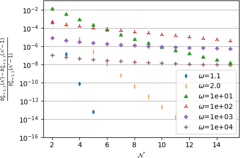
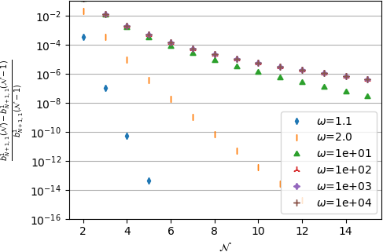
3 Particular case of a confocal \(N\)-layer spheroid with perfect interfaces only
It has been shown in the previous section that the complete solution of the conduction Eshelby problem of a \(N\)-layer confocal spheroid is estimated by resolution of a system of equations corresponding to interface conditions relating the temperature and normal flux expressions of a layer to those of the adjacent layer. In general these expressions write as infinite sums because of the couplings between harmonics of the same order but different degrees arising in the cases of imperfect interface conditions. Indeed the latter introduce a mix between temperature Eq. 8 and normal flux Eq. 9 which are not decomposed in the same basis of orthogonal functions and which induce equations such as Eq. 23, Eq. 24, Eq. 49 and Eq. 50 involving coupling integrals \(I_{ij}\), \(J_{ij}\) and \(K_{ij}\). However in the case of a \(N\)-layer sphere, it can be shown that the decompositions of the temperature and the normal flux are consistent at a given radius (see for instance equations (7) and (8) of [13]). This means that, even in the case of imperfect interfaces, only two harmonics (one regular and one irregular) and two coefficients per layer are needed. Coming back to the confocal \(N\)-layer spheroidal problem, the complete resolution developed in the previous section shows that here again only the first regular and irregular harmonics are involved in the solution if all the interfaces are of perfect type, as presented hereafter.
3.1 Axial problem
As in Section 2.2, this problem corresponds to a macroscopic temperature gradient of the form \(\uv{H}=H_3\ve{3}\). The continuity conditions at the interfaces are expressed in Eq. 21 and Eq. 22. The latter together with the remote conditions Eq. 19 and regularity at the origin Eq. 20 imply that the solution writes in each layer \(\ell\)
\[ \wideeq{T_\ell = c\, P_1(p)\,\bigg(a_{\ell}^0\,P_1(q)+ b_{\ell}^0\,Q_1(q)\bigg)= \bigg(a_{\ell}^0+ b_{\ell}^0\,{\mathcal{T}}_a(q)\bigg)\,\ve{3}\cdot\x} \tag{57}\]
\[ \wideeq{\uv{u}_\ell\cdot\ve{q} = -k_\ell\,\frac{\sqrt{q^2-1}}{\sqrt{q^2-p^2}}\, P_1(p)\, \bigg(a_{\ell}^0\,P_1'(q)+b_{\ell}^0\,Q_1'(q)\bigg)= -k_\ell\, \bigg(a_{\ell}^0+b_{\ell}^0\,{\mathcal{U}}_a(q)\bigg)\,\ve{3}\cdot\ve{q}} \tag{58}\]
with \({\mathcal{T}}_a\) and \({\mathcal{U}}_a\) defined in Eq. 12 and Eq. 15 and \(\x\) and \(\ve{q}\) written as in Eq. 124 and Eq. 127. The reference to the degree \(1\) has been omitted in the coefficients, i.e. \(a_{\ell}^0\) and \(b_{\ell}^0\) instead of \(a_{\ell,1}^0\) and \(b_{\ell,1}^0\) since only this degree is involved in the solution here while the superscript \(0\) corresponding to the order is kept to distinguish the axial and the transverse solutions. The consistency with the averages already obtained in the general case in Eq. 11 and Eq. 14 is straightforward by Stokes theorem. Interestingly here the solution in temperature over any spheroid of linear eccentricity \(c\) defined as an iso-\(q\) surface has the same structure as the remote condition Eq. 6. Indeed Eq. 57 writes \(T_\ell=\lambda(q)\ve{3}\cdot\x\) with \(\lambda(q)=a_{\ell}^0+b_{\ell}^0\,{\mathcal{T}}_a(q)\). It is then possible to consider the problem of conduction posed only on the spheroid \({\mathcal{E}}_\ell\) with boundary condition of the form \(T=\lambda(q_\ell)\ve{3}\cdot\x\) at finite distance over \({\mathcal{I}}_\ell\). By linearity, there exists a function \(k^{a,eq}_\ell\) depending only on the material property and geometrical characteristics of the \(\ell\)-layer spheroid \({\mathcal{E}}_\ell\) such that \(\uv{u}\cdot\ve{q}=-k^{a,eq}_\ell\lambda(q_\ell)\ve{3}\cdot\ve{q}\) over \({\mathcal{I}}_\ell\). Using Stokes theorem, this also means that \(<\uv{u}>_\ell=-k^{a,eq}_\ell<\uv{h}>_{{\mathcal{E}}_\ell}\) where \(k^{a,eq}_\ell\) can be interpreted as the equivalent axial conductivity of the \(\ell\)-layer spheroid \({\mathcal{E}}_\ell\) and also writes by consistency with Eq. 57 and Eq. 58
\[ \wideeq{k^{a,eq}_\ell=k_\ell\frac{a_{\ell}^0+b_{\ell}^0\,{\mathcal{U}}_a(q_\ell)} {a_{\ell}^0+b_{\ell}^0\,{\mathcal{T}}_a(q_\ell)}} \tag{59}\]
By unicity of the solution it comes that the temperature and flux fields outside \({\mathcal{E}}_\ell\) remain unchanged if the composite spheroid \({\mathcal{E}}_\ell\) is replaced by a homogeneous one of axial conductivity equal to \(k^{a,eq}_\ell\).
Although theoretically clear from this reasoning based on linearity and on the form of the solution Eq. 57, the fact that \(k^{a,eq}_\ell\) does not depend on the layers which are outside \({\mathcal{E}}_\ell\) may not be obvious in Eq. 59 since the coefficients \(a_{\ell}^0\) and \(b_{\ell}^0\) are built from the complete problem involving the whole system. The equations to be solved stem from Eq. 27 with \({\mathcal{N}}=1\) without any need to invoke any truncation here since the exact solution only requires \({\mathcal{N}}=1\). In the current framework, Eq. 27 alternatively writes
\[ \wideeq{a_{\ell+1}^0+ b_{\ell+1}^0\,{\mathcal{T}}_a(q_\ell) =a_{\ell}^0+b_{\ell}^0\,{\mathcal{T}}_a(q_\ell)} \tag{60}\]
\[ \wideeq{k_{\ell+1}\,\bigg(a_{\ell+1}^0+b_{\ell+1}^0\,{\mathcal{U}}_a(q_\ell)\bigg) =k_\ell\,\bigg(a_{\ell}^0+b_{\ell}^0\,{\mathcal{U}}_a(q_\ell)\bigg)} \tag{61}\]
Furthermore Eq. 26 recalls that the core layer depends on one single scalar coefficient \(a_{1}^0\) which can eventually be related to the remote temperature gradient \(a_{N+1}^0=H_3\) by \(a_{1}^0=H_3/S_N^{11}\) since \(S_N^{11}\) in Eq. 38 is scalar here. Finally from Eq. 37 the coefficients of layer \(\ell>1\) are deduced from the single one of the core layer by simple linear relationships \(a_{\ell}^0=S_{\ell-1}^{11}a_{1}^0\) and \(b_{\ell}^0=S_{\ell-1}^{21}a_{1}^0\) where the scalars \(S_{\ell-1}^{11}\) and \(S_{\ell-1}^{21}\) only depend by construction on the material and geometrical characteristics of the spheroid \({\mathcal{E}}_\ell\) bounded by \({\mathcal{I}}_\ell\). It follows from Eq. 57 and Eq. 58 that
\[ \wideeq{T_\ell =a_{1}^0\, \bigg(S_{\ell-1}^{11}+ S_{\ell-1}^{21}\,{\mathcal{T}}_a(q)\bigg)\,\ve{3}\cdot\x} \tag{62}\]
\[ \wideeq{\uv{u}_\ell\cdot\ve{q} = -a_{1}^0\,k_\ell\, \bigg(S_{\ell-1}^{11}+S_{\ell-1}^{21}\,{\mathcal{U}}_a(q)\bigg)\,\ve{3}\cdot\ve{q}} \tag{63}\]
It also results that the equivalent conductivity of the \(\ell\)-layer spheroid \({\mathcal{E}}_\ell\) rewrites
\[ \wideeq{k^{a,eq}_\ell=k_\ell\frac{S_{\ell-1}^{11}+S_{\ell-1}^{21}\,{\mathcal{U}}_a(q_\ell)} {S_{\ell-1}^{11}+S_{\ell-1}^{21}\,{\mathcal{T}}_a(q_\ell)}} \tag{64}\]
which confirms that \(k^{a,eq}_\ell\) depends only on the internal characteristics of \({\mathcal{E}}_\ell\).
Besides the general solution provided in the last section, it is now interesting to examine more in details how to express practically the solution Eq. 57 and Eq. 58 and the values \(k^{a,eq}_\ell\) in the light of this notion of equivalent of sub-spheroid, through a recursive procedure.
Case \(N=1\)
This case corresponds to a uniform spheroid embedded in an infinite matrix, in other words to the classical Eshelby problem. The unknowns \(a_{1}^0\) and \(b_{2}^0\) are determined by the system Eq. 6061 in which \(\ell=1\) and \(a_{2}^0=H_3\) and \(b_{1}^0=0\)
\[ \wideeq{a_{1}^0 =\left( 1+ \frac{k_1-k_2}{k_2} \frac{{\mathcal{T}}_a(q_1)}{{\mathcal{T}}_a(q_1)-{\mathcal{U}}_a(q_1)} \right)^{-1}\,a_{2}^0} \tag{65}\]
\[ \wideeq{b_{2}^0 = \frac{k_2-k_1}{k_1\,{\mathcal{T}}_a(q_1)-k_2\,{\mathcal{U}}_a(q_1)} \,a_{2}^0} \tag{66}\]
As expected, the expression Eq. 65 relating the uniform axial temperature gradient to the remote one exactly corresponds to the axial component of the Eshelby solution as recalled in Section 9 ([1], [45]). Indeed the axial component of the Eshelby tensor can be retrieved from Eq. 65 by exploiting Eq. 12 and Eq. 15 as well as Eq. 125
\[ \wideeq{S_a(q)=\frac{{\mathcal{T}}_a(q)}{{\mathcal{T}}_a(q)-{\mathcal{U}}_a(q)} =\left(q^2-1\right)\,\left(q\,\arccoth{q}-1\right) \quad\textrm{with }q=\frac{\omega}{\sqrt{\omega^2-1}}} \tag{67}\]
which boils down to the axial component of the prolate case (\(\omega>1\)) of Eq. 165. It is worth recalling here that this results also holds for the oblate case (\(\omega<1\)) after applying the formal transformation \(q=\imath\tau\) introduced in Section 6 and Eq. 126
\[ \wideeq{S_a(\imath\tau) =\left(1+\tau^2\right)\,\left(1-\tau\,\arccot{\tau}\right) \quad\textrm{with }\tau=\frac{\omega}{\sqrt{1-\omega^2}}} \tag{68}\]
Case \(N=2\)
As recalled hereabove in Eq. 59 and associated comments, the two-layer spheroid \({\mathcal{E}}_2\) can be replaced by a homogeneous spheroid of axial conductivity
\[ \wideeq{k^{a,eq}_2=k_\ell\frac{a_{2}^0+b_{2}^0\,{\mathcal{U}}_a(q_2)} {a_{2}^0+b_{2}^0\,{\mathcal{T}}_a(q_2)}} \tag{69}\]
without disturbing the solution established in the matrix \(\Omega_3\). Moreover the relationships Eq. 65 and Eq. 66 remain valid since they only come from the continuity equations on \({\mathcal{I}}_1\) and \(b_{1}^0=0\). Introducing then \(b_{2}^0\)Eq. 66 into Eq. 69, the latter becomes after some algebra
\[ \wideeq{k^{a,eq}_2=k_2 + \frac{{\mathcal{T}}_a(q_2)-{\mathcal{U}}_a(q_2)}{{\mathcal{T}}_a(q_1)-{\mathcal{U}}_a(q_1)}\, \left( \frac{1}{k_1-k_2}+\frac{1}{k_2}\, \frac{{\mathcal{T}}_a(q_1)-{\mathcal{T}}_a(q_2)}{{\mathcal{T}}_a(q_1)-{\mathcal{U}}_a(q_1)} \right)^{-1}} \tag{70}\]
The definitions Eq. 12 and Eq. 15 can again be exploited to rewrite Eq. 70. It is worth noting first that
\[ \wideeq{f_1=\frac{{\mathcal{T}}_a(q_2)-{\mathcal{U}}_a(q_2)}{{\mathcal{T}}_a(q_1)-{\mathcal{U}}_a(q_1)} =\frac{q_1\,\left(q_1^2-1\right)}{q_2\,\left(q_2^2-1\right)}} \tag{71}\]
corresponds to the volume fraction occupied by the core \({\mathcal{E}}_1\) within \({\mathcal{E}}_2\). Then from Eq. 67, the relationships are obtained
\[ \wideeq{S_a(q_1)=\frac{{\mathcal{T}}_a(q_1)}{{\mathcal{T}}_a(q_1)-{\mathcal{U}}_a(q_1)} \quad\textrm{;}\quad f_1\,S_a(q_2)=\frac{{\mathcal{T}}_a(q_2)}{{\mathcal{T}}_a(q_1)-{\mathcal{U}}_a(q_1)}} \tag{72}\]
so that Eq. 70 becomes
\[ \wideeq{k^{a,eq}_2=k_2 + f_1\, \left( \frac{1}{k_1-k_2}+\frac{S_a(q_1)-f_1\,S_a(q_2)}{k_2}\, \right)^{-1}} \tag{73}\]
where once again the replacement of \(q\) by \(\imath\tau\) allows to consider oblate instead of prolate spheroids.
Recursive procedure to the general case \(N\)
The solution to the \(N\)-layer spheroidal inhomogeneity can be obtained by analogy with the two-layer one using a recursive homogenization strategy consisting in building step-by-step from \(\ell=1\) to \(\ell=N\) the equivalent homogeneous spheroid comprising the \(\ell\) first layers starting from the core (see Fig. 3). Namely, for a given \(1\leq\ell\leq N-1\), the \(\ell\) first internal layers are replaced by an equivalent spheroid and the composite two-layer spheroid made up with this equivalent core surrounded by the \((\ell+1)^{\mathrm{th}}\) layer is finally considered. The strategy employed with the two-layer case together with the reasoning showing that the field outside the internal spheroid is not perturbed by the replacement of the latter by an equivalent homogeneous core leads to the following adaptation of Eq. 73
\[ \wideeq{k^{a,eq}_{\ell+1}=k_{\ell+1} + f_\ell\, \left( \frac{1}{k^{a,eq}_{\ell}-k_{\ell+1}}+ \frac{S_a(q_{\ell})-f_\ell\,S_a(q_{\ell+1})}{k_{\ell+1}}\, \right)^{-1} \;\textrm{with } f_\ell=\frac{|{\mathcal{E}}_\ell|}{|{\mathcal{E}}_{\ell+1}|} =\frac{q_\ell\,\left(q_\ell^2-1\right)}{q_{\ell+1}\,\left(q_{\ell+1}^2-1\right)}} \tag{74}\]
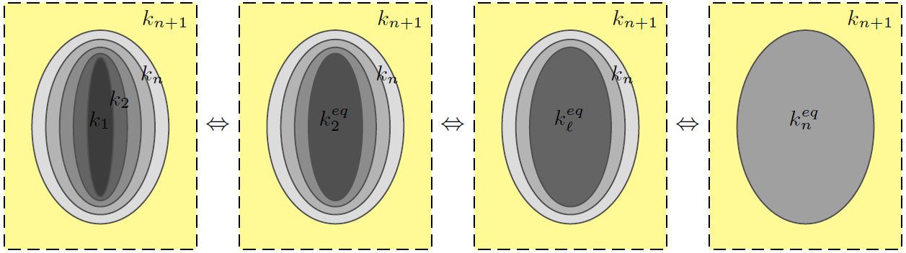
Once the successive values of \(k^{a,eq}_\ell\) have been identified starting from \(k^{a,eq}_1=k_1\) to finish with \(k^{a,eq}_N\) corresponding to the whole composite equivalent axial conductivity, it may be convenient to notice that a recursive procedure can also be used, alternatively to the general strategy developed in Section 2, to identify all the coefficients \(a_{\ell}^0\) and \(b_{\ell}^0\) giving the complete solution fields. This recursive procedure starts from the outside to reach, layer by layer, the core of the spheroid. The outside constants are determined by the remote condition on the one hand and the analogy with Eq. 66 on the other hand considering the equivalent spheroid instead of the \(N\)-layer composite
\[ \wideeq{a_{N+1}^0=H_3 \quad\textrm{;}\quad b_{N+1}^0= \frac{k_{N+1}-k^{a,eq}_{N}}{k^{a,eq}_{N}\,{\mathcal{T}}_a(q_N)- k_{N+1}\,{\mathcal{U}}_a(q_N)} \,H_3} \tag{75}\]
Then assuming that the constants of layer \(\ell+1\) are known, those of layer \(\ell\) are obtained through a reasoning based first on the introduction of the average axial temperature gradient in \({\mathcal{E}}_\ell\) identified in Eq. 11 as \(a_{\ell}'=a_{\ell}^0+b_{\ell}^0\,{\mathcal{T}}_a(q_\ell)\). Exploiting then the definition of \(k^{a,eq}_\ell\) in Eq. 59, the system Eq. 6061 writes
\[ \wideeq{a_{\ell+1}^0+ b_{\ell+1}^0\,{\mathcal{T}}_a(q_\ell) =a_{\ell}'} \tag{76}\]
\[ \wideeq{k_{\ell+1}\,\bigg(a_{\ell+1}^0+b_{\ell+1}^0\,{\mathcal{U}}_a(q_\ell)\bigg) =k^{a,eq}_\ell\,a_{\ell}'} \tag{77}\]
This system is formally analogous to that of the single spheroid case in which the constant corresponding to the irregular harmonics vanishes, leading then to the solution Eq. 65
\[ \wideeq{a_{\ell}'=\left( 1+ \frac{k^{a,eq}_\ell-k_{\ell+1}}{k_{\ell+1}} \frac{{\mathcal{T}}_a(q_\ell)}{{\mathcal{T}}_a(q_\ell)-{\mathcal{U}}_a(q_\ell)} \right)^{-1}\,a_{\ell+1}^0} \tag{78}\]
The end of the identification is finally achieved by solving the system made by \(a_{\ell}'=a_{\ell}^0+b_{\ell}^0\,{\mathcal{T}}_a(q_\ell)\) and Eq. 59
\[ \wideeq{a_{\ell}^0 = \frac{k^{a,eq}_\ell\,{\mathcal{T}}_a(q_\ell)-k_\ell\,{\mathcal{U}}_a(q_\ell)} {k_\ell\left({\mathcal{T}}_a(q_\ell)-{\mathcal{U}}_a(q_\ell)\right)} \,a_{\ell}'} \tag{79}\]
\[ \wideeq{b_{\ell}^0 = \frac{k_\ell-k^{a,eq}_\ell} {k_\ell\left({\mathcal{T}}_a(q_\ell)-{\mathcal{U}}_a(q_\ell)\right)} \,a_{\ell}'} \tag{80}\]
3.2 Transverse problem
This section is analogous to Section 3.1 with a remote temperature gradient here equal to \(\uv{H}=H_1\ve{1}\), which means that the solutions Eq. 57 and Eq. 58 now become
\[ \wideeq{T_\ell = c\, P_1^1(p)\,\bigg(a_{\ell}^1\,P_1^1(q)+ b_{\ell}^1\,Q_1^1(q)\bigg)\,\cos{\varphi} = -\bigg(a_{\ell}^1+ b_{\ell}^1\,{\mathcal{T}}_t(q)\bigg)\,\ve{1}\cdot\x} \tag{81}\]
\[ \wideeq{\uv{u}_\ell\cdot\ve{q} = -k_\ell\,\frac{\sqrt{q^2-1}}{\sqrt{q^2-p^2}}\, P_1^1(p)\, \bigg(a_{\ell}^1\,P_1^{1'}(q)+b_{\ell}^1\,Q_1^{1'}(q)\bigg)\,\cos{\varphi}= k_\ell\, \bigg(a_{\ell}^1+b_{\ell}^1\,{\mathcal{U}}_t(q)\bigg)\,\ve{1}\cdot\ve{q}} \tag{82}\]
with \({\mathcal{T}}_t\) and \({\mathcal{U}}_t\) defined in Eq. 12 and Eq. 15 and \(\x\) and \(\ve{q}\) written as in Eq. 124 and Eq. 127. It makes no doubt that all the reasoning and developments of the axial problem can be reproduced here only changing \(H_3\) by \(H_1\), the coefficients \(a_{\ell}^0\) and \(b_{\ell}^0\) by \(-a_{\ell}^1\) and \(-b_{\ell}^1\) and the functions \({\mathcal{T}}_a\) and \({\mathcal{U}}_a\) by \({\mathcal{T}}_t\) and \({\mathcal{U}}_t\). In particular, the transverse component of the Eshelby tensor can be identified by analogy with Eq. 67
\[ \wideeq{S_t(q)=\frac{{\mathcal{T}}_t(q)}{{\mathcal{T}}_t(q)-{\mathcal{U}}_t(q)} =\frac{q}{2}\,\left(q-\left(q^2-1\right)\,\arccoth{q}\right) \quad\textrm{with }q=\frac{\omega}{\sqrt{\omega^2-1}}} \tag{83}\]
also consistent with the prolate case of Eq. 165 as well as the oblate case provided that the transformation \(q=\imath\tau\) is applied
\[ \wideeq{S_t(\imath\tau) =\frac{\tau}{2}\, \left(\left(1+\tau^2\right)\,\arccot{\tau}-\tau\right) \quad\textrm{with }\tau=\frac{\omega}{\sqrt{1-\omega^2}}} \tag{84}\]
Besides the notion of equivalent conductivity depending only on the internal characteristics of the corresponding ellipsoid still holds as defined by the transverse counterpart of Eq. 59
\[ \wideeq{k^{t,eq}_\ell=k_\ell\frac{a_{\ell}^1+b_{\ell}^1\,{\mathcal{U}}_t(q_\ell)} {a_{\ell}^1+b_{\ell}^1\,{\mathcal{T}}_t(q_\ell)}} \tag{85}\]
and satisfies a recursive definition analogous to Eq. 74
\[ \wideeq{k^{t,eq}_{\ell+1}=k_{\ell+1} + f_\ell\, \left( \frac{1}{k^{t,eq}_{\ell}-k_{\ell+1}}+ \frac{S_t(q_{\ell})-f_\ell\,S_t(q_{\ell+1})}{k_{\ell+1}}\, \right)^{-1} \;\textrm{with } k^{t,eq}_1=k_1} \tag{86}\]
Finally the back recursive strategy leading to Eq. 7580 can also be adapted here to the transverse problem to identify all the coefficients \(a_{\ell}^1\) and \(b_{\ell}^1\), still changing \(H_3\) by \(H_1\), \(a_{\ell}^0\) and \(b_{\ell}^0\) by \(-a_{\ell}^1\) and \(-b_{\ell}^1\), \({\mathcal{T}}_a\) and \({\mathcal{U}}_a\) by \({\mathcal{T}}_t\) and \({\mathcal{U}}_t\) and \(k^{a,eq}_{\ell}\) by \(k^{t,eq}_{\ell}\).
Gathering the component expressions Eq. 74 and Eq. 86, the equivalent conductivity of the successive spheroids \({\mathcal{E}}_\ell\) can be written under the following recursive tensor form
\[ \wideeq{\uu{k}^{eq}_{\ell+1}=\uu{k}_{\ell+1} + f_\ell\, \left( \left(\uu{k}^{eq}_{\ell}-\uu{k}_{\ell+1}\right)^{-1}+ \left(\uu{S}^{\mathcal{E}}(\omega_{\ell}) -f_\ell\,\uu{S}^{\mathcal{E}}(\omega_{\ell+1})\right)\cdot \uu{k}_{\ell+1}^{-1}\, \right)^{-1} \;\textrm{with } \uu{k}^{eq}_1=\uu{k}_1} \tag{87}\]
where the generic Eshelby tensor \(\uu{S}^{\mathcal{E}}\) is given as a function of the aspect ratio in Eq. 164165.
3.3 Analogy with the Ponte-Casta~{n}eda-Willis bound
This section aims at putting in evidence that the recursive relationship Eq. 87 is actually intimately related to the Ponte-Casta~{n}eda-Willis (PCW) bound [46] applied to a two-phase matrix composite. In the framework adopted in [46] transposed from elasticity to conductivity, a matrix of conductivity \(\uu{k}_m\) and aligned inhomogeneities of conductivity \(\uu{k}_c\) and volume fraction \(f\) are considered. One of the interest of the PCW bound relies upon the uncoupling between the individual shapes and mutual spatial distribution of phases. Here the particle shape as well as the unique spatial distribution are assumed to be ellipsoidal and therefore associated to Eshelby tensors respectively denoted by \(\uu{S}^c_m\) and \(\uu{S}^{\mathcal{D}}_m\) (depending on the matrix \(\uu{k}_m\) only if the latter is anisotropic as recalled in Section 9). The PCW bound writes from [46]
\[ \wideeq{\uu{k}^{\textrm{PCW}}=\uu{k}_m + f\, \left( \left(\uu{k}_c-\uu{k}_m\right)^{-1}+ \left(\uu{S}^c_m -f\,\uu{S}^{\mathcal{D}}_m\right)\cdot \uu{k}_m^{-1}\, \right)^{-1}} \tag{88}\]
Note that the upper or lower status of the bound depends on the contrast between the two phases. This bound can anyway be considered as an estimate. It is also worth recalling that, in this condition of unique spatial distribution, the PCW bound coincides with the Maxwell scheme estimate provided that the shape related to the spatial distribution plays the role of the shape of the effective particle as emphasized in [47]. In the case of spheroidal shapes, isotropy of the matrix and spatial distribution respectively associated to the aspect ratios \(\omega_c\) and \(\omega_{\mathcal{D}}\), the Eshelby tensors in Eq. 88 can be calculated by Eq. 164165.
It is clear now that the recursive formula Eq. 87 coincides with the formal application of Eq. 88 in which the role of the matrix is played by the surrounding material \(\uu{k}_m=\uu{k}_{\ell+1}\), the role of the particle is played by the effective core \(\uu{k}_c=\uu{k}^{eq}_{\ell}\) of volume fraction equal to the ratio between \(|{\mathcal{E}}_{\ell}|\) and \(|{\mathcal{E}}_{\ell+1}|\) i.e. \(f=f_{\ell}\) and the shape of the particle corresponds to that of the internal core of aspect ratio \(\omega_c=\omega_{\ell}\) whereas the shape of the distribution corresponds to that of the external boundary \(\omega_{\mathcal{D}}=\omega_{\ell+1}\).
The correspondence between these two expressions deserves some comments. Indeed the interpretation of the recursive formula in terms of PCW bound somehow casts a new light on the notion of security ellipsoids introduced in [46]. This notion, which is schematized by aligned ellipsoids in Figure~2 of [46], is related to a mathematical concept of spatial distribution in the latter reference whereas it explicitly corresponds to a geometrical definition in the case of the two-layer spheroid leading to Eq. 87. On the one hand, the PCW bound of a two-phase composite as presented hereabove is restricted to a single shape and orientation of the spatial distribution but there is no limitation about the choice of this ellipsoidal shape: in particular it is independent of the particle one provided that the volume fraction allows a configuration without overlapping of security ellipsoids. Furthermore, the PCW bound Eq. 88 is not restricted to isotropic behavior. On the other hand, the solution to the two-layer spheroid is restricted to confocal spheroids delimiting the surrounding zone which is assumed isotropic whereas the core can be transverse isotropic with the same symmetry axis as the particle. Nevertheless, this solution is obtained in the framework of an auxiliary Eshelby problem, which means that it can be further used in homogenization schemes involving arbitrary directions of several sets of such particles including their security spheroids as drawn in Fig. 4.
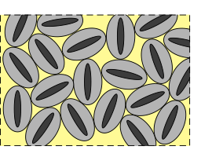
4 Notion of equivalent particle in conduction
The notion of equivalent particle is now first examined in the framework of the confocal \(N\)-layer spheroid for which a complete solution has been derived. Then, after general considerations about ellipsoidal equivalent particles, a particular focus is paid on the case of a homogeneous spheroid with an imperfect interface reviewing some already published results and providing some extensions in a simplified framework.
4.1 Case of the confocal \(N\)-layer spheroid
It has been shown in Section 3 that a confocal \(N\)-layer spheroid with perfect interfaces has actually the same overall interaction with its surrounding material as a homogeneous spheroid of conductivity defined by the recursive algorithm Eq. 87. In particular, it has been highlighted in this case that the equivalent conduction only depends on the internal content of the spheroid and not on the surrounding material. This result does not hold anymore in presence of imperfect interfaces. In the latter case, it is however possible to define an equivalent conductivity by taking advantage of Eq. 41, Eq. 42, Eq. 55 and Eq. 56
\[ \wideeq{\uu{k}^{eq}=k_{N+1} \left( \frac{1+\frac{b_{N+1,1}^1}{a_{N+1,1}^1}\,{\mathcal{U}}_t(q_N)} {1+\frac{b_{N+1,1}^1}{a_{N+1,1}^1}\,{\mathcal{T}}_t(q_N)} \,\left(\idd-\ve{3}\otimes\ve{3}\right) + \frac{1+\frac{b_{N+1,1}^0}{a_{N+1,1}^0}\,{\mathcal{U}}_a(q_N)} {1+\frac{b_{N+1,1}^0}{a_{N+1,1}^0}\,{\mathcal{T}}_a(q_N)} \,\ve{3}\otimes\ve{3} \right)} \tag{89}\]
depending on the ratios \(b_{N+1,1}^0/a_{N+1,1}^0\) and \(b_{N+1,1}^1/a_{N+1,1}^1\) which have been obtained from Eq. 40 and Eq. 54. In general, due to the presence of imperfect interfaces inducing infinite series of harmonics in each layer and more particularly in the core, this equivalent conductivity actually depends on the conductivity \(k_{N+1}\) of the surrounding material. Nevertheless it may be noted that not only the composite and the equivalent particle have the same overall conductivity (by definition) but they also both have the same temperature gradient and heat flux vector averages over the particle which are the required quantities in homogenization schemes relying on auxiliary Eshelby problems. Indeed these averages within the composite and the equivalent particle have the same structure Eq. 41, Eq. 42, Eq. 55 and Eq. 56 also depending on the ratios \(b_{N+1,1}^0/a_{N+1,1}^0\) and \(b_{N+1,1}^1/a_{N+1,1}^1\) involving coefficients in the infinite matrix. The equality Eq. 89 also means the equality between the corresponding ratios of both problems (the ratio of the axial resp. transverse problem of the \(N\)-layer spheroid is equal to the ratio of the axial resp. transverse problem of the equivalent spheroid) and consequently the equality between the corresponding averages Eq. 41, Eq. 42, Eq. 55 and Eq. 56.
4.2 General definition and construction of concentration tensor averages
The considerations on an equivalent ellipsoid in the particular cases discussed in Section 3.1 and Section 4.1 are now extended to the general case of an arbitrarily heterogeneous inclusion. An equivalent particle of a composite is defined as a homogeneous particle occupying the same domain and having the same overall interaction effect with its vicinity. In the framework of an Eshelby problem defined by an infinite matrix of conductivity \(\uu{k}_m\) (or resistivity \(\uu{r}_m=\uu{k}_m^{-1}\)) and an ellipsoidal composite \(\mathcal{E}\) subjected to a remote temperature gradient \(\uv{H}\), it is possible to introduce concentration tensors \(\uu{A}(\x)\) and \(\uu{B}(\x)\) satisfying Eq. 7 whatever the distribution of heterogeneities within \(\mathcal{E}\). It follows that the average values of temperature gradient and heat flux vector within \(\mathcal{E}\) are related by
\[ \wideeq{<\uv{u}>_{\mathcal{E}}=-\uu{k}^{eq}\cdot<\uv{h}>_{\mathcal{E}} \quad\textrm{with}\quad \uu{k}^{eq}=<\uu{B}>_{\mathcal{E}}\cdot<\uu{A}>_{\mathcal{E}}^{-1} \quad\textrm{or}\quad \uu{r}^{eq}={\uu{k}^{eq}}^{-1}=<\uu{A}>_{\mathcal{E}}\cdot<\uu{B}>_{\mathcal{E}}^{-1}} \tag{90}\]
which can be considered as a definition of an equivalent thermal conductivity or resistivity (see Fig. 5).
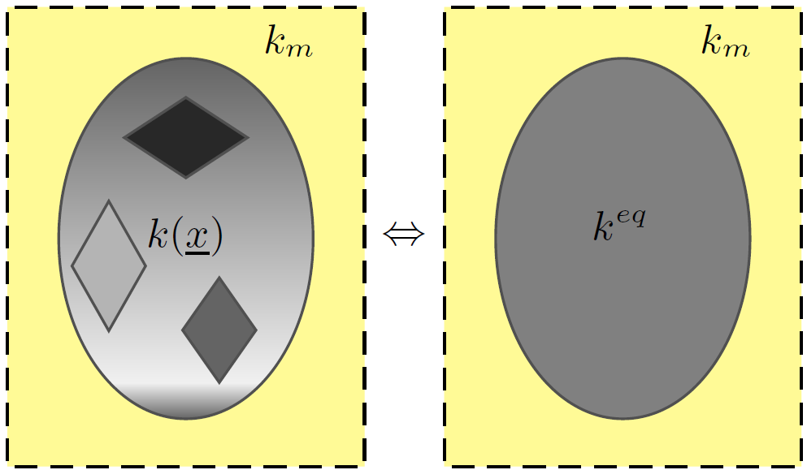
Such a definition Eq. 90 may raise the issue of the symmetry \(\uu{k}^{eq}\) or \(\uu{r}^{eq}\) but this important general question will not be addressed in this work since the symmetries of the considered problems in the sequel imply that \(<\uu{A}>_{\mathcal{E}}\) and \(<\uu{B}>_{\mathcal{E}}\) are diagonalized in the same frame, which ensures the symmetry of \(\uu{k}^{eq}\). Besides, unlike very particular cases as that of a confocal \(N\)-layer spheroid with perfect interfaces, \(\uu{k}^{eq}\) as expressed in Eq. 90 is generally not independent of the property of the reference medium in which the particle is embedded. Such a dependence somehow weakens the intrinsic character of the notion of equivalent particle since the equivalent property of the particle may be sensitive to any change of the matrix behavior. This also raises the issue of the determination of an equivalent particle within a representative volume element in the framework of Eshelby-based homogenization schemes. Indeed the reference medium playing the role of the matrix in the auxiliary Eshelby problem in which the particle is embedded depends on the choice of the scheme (the matrix itself for dilute, Mori-Tanaka or Maxwell schemes and the homogenized medium for the self-consistent scheme), which may introduce different definitions of the equivalent particle. Nevertheless, whether \(\uu{k}^{eq}\) depends or not on \(\uu{k}_m\), it is proven in Section 11 by means of the integral solution, that the average concentration tensors \(<\uu{A}>_{\mathcal{E}}\) and \(<\uu{B}>_{\mathcal{E}}\) which are needed in homogenization schemes are rigorously provided by the Eshelby solution of the equivalent particle Eq. 176
\[ \wideeq{<\uu{A}>_{\mathcal{E}}=\left( \idd+\uu{S}^{\mathcal{E}}_m\cdot \uu{k}_m^{-1}\cdot\left(\uu{k}^{eq}-\uu{k}_m\right) \right)^{-1} \quad;\quad <\uu{B}>_{\mathcal{E}}=\uu{k}^{eq}\cdot\left( \idd+\uu{S}^{\mathcal{E}}_m\cdot \uu{k}_m^{-1}\cdot\left(\uu{k}^{eq}-\uu{k}_m\right) \right)^{-1}} \tag{91}\]
Although intuitively expected, this result was not obvious since only the products \(<\uu{B}>_{\mathcal{E}}\cdot<\uu{A}>_{\mathcal{E}}^{-1}\) were initially identical in the real and equivalent problems. Note that it holds for any anisotropic behavior of materials, distribution of heterogeneities in the composite particle and external ellipsoidal shape of the latter.
4.3 Case of a homogeneous spheroid with an imperfect interface
This section focuses on a composite spheroid made up with a homogeneous core surrounded by an imperfect interface of LC or HC type. It is obviously a particular case of the more general exact solution derived in Section 2 with \(N=1\) ([20], [21], [42]). For finite values of the (LC or HC) interface property, the equivalent conductivity of such a particle in the sense of Eq. 90 is actually not independent of the matrix property in an Eshelby problem. However the exact solution requires a rather heavy calculation involving infinite series of harmonics instead of which some approximations can be derived based on simplifying assumptions. The present section aims at reviewing some of them which are already published and proposing a generalized framework allowing to build new ones. For the sake of simplicity, in the following, the matrix conductivity is denoted by \(\uu{k}_m\) instead of \(\uu{k}_2\), the core conductivity by \(\uu{k}_c\) instead of \(\uu{k}_1\) and the subscript is omitted in the properties of the interface (\(\alpha\) or \(\beta\) instead of \(\alpha_1\) or \(\beta_1\)). For further convenience the matrix and core resistivities \(\uu{r}_m=\uu{k}_m^{-1}\) and \(\uu{r}_c=\uu{k}_c^{-1}\) are also introduced. The particle domain is denoted by \(\mathcal E\).
In the literature, the problem of the spheroid (or even ellipsoid) with interface is usually tackled under two different angles~: either the interface is seen as in the exact solution as a surface with surface properties ([27], [28], [29], [30], [31]) or it corresponds to the limit of an interphase of (heterogeneous) thickness tending towards \(0\) with adapted conductivity according to the LC or HC type ([32], [33], [34], [35]).
4.3.1 Interface modelled as a surface
It has been shown that the temperature gradient as well as the heat flux vector remain uniform within a sphere or circular cylinder surrounded by a HC or LC interface and submitted to a remote temperature gradient even in presence of anisotropic materials (see [27] for HC and [28] for LC interface). Nevertheless this result does not hold in the general ellipsoidal case. Indeed in a spheroid, as shown in Section 2, these fields are heterogeneous in the core due to the existence of regular terms of degree strictly greater than 1 which are involved when the interface is imperfect. However approximations of the concentration tensor averages have been proposed in [29] for LC interface and in [31] for HC interface based on the use of integral solutions incorporating relevant discontinuities in which heterogeneous temperature gradient (HC case) or heat flux vector (LC case) are replaced by their averages within the particle. These approximations can be easily retrieved thanks to the concept of the (approximated here) equivalent conductivity tensor introduced in Eq. 91.
In the case of LC interface, the average of the temperature gradient within the particle (comprising the interface) is decomposed in a regular term and a surface term involving the temperature discontinuity
\[ \wideeq{<\uv{h}>_{\mathcal{E}}=-\uu{r}_c\cdot<\uv{u}>_{\mathcal{E}} +\frac{1}{|{\mathcal{E}}|}\int_{\partial{\mathcal{E}}}{\saut{T}\,\ve{q}}\ud S =-\uu{r}_c\cdot<\uv{u}>_{\mathcal{E}} -\frac{\alpha}{|{\mathcal{E}}|} \int_{\partial{\mathcal{E}}}{\ve{q}\otimes\ve{q}\cdot\uv{u}}\ud S} \tag{92}\]
For a spherical (or circular particle in 2D), the heat flux vector can rigorously be replaced by its average over \(\mathcal E\) in the last integral of Eq. 92 thanks to the relationship between the position vector and the unit normal vector (\(\x=r\ve{q}\) where r is the radius) and to Eq. 1. For an arbitrary ellipsoidal shape, this replacement is not allowed but is invoked in [29] as a simplifying assumption yielding in the case of a spheroid (i.e. using spheroidal notations)
\[ \wideeq{<\uv{h}>_{\mathcal{E}}\approx -{\uu{r}_{LC}^{eq}}\cdot<\uv{u}>_{\mathcal{E}} \quad\textrm{with}\quad \uu{r}_{LC}^{eq}={\uu{k}_{LC}^{eq}}^{-1}=\uu{r}_c+\alpha\uu{R} \quad\textrm{and}\quad \uu{R}= \frac{1}{|{\mathcal{E}}|} \int_{\partial{\mathcal{E}}}{\ve{q}\otimes\ve{q}}\ud S} \tag{93}\]
Noticeably, unlike the exact solution, this equivalent conductivity does not depend on the conductivity of the matrix and is valid even in the case of anisotropic materials. In addition, inserting \(\uu{k}^{eq}\) given by Eq. 93 in Eq. 91 exactly boils down to the concentration averages presented in [29] and usable in homogenization schemes. For practical implementation the second-order tensor \(\uu{R}\) can easily be calculated thanks to Eq. 127 and Eq. 128 for a spheroid of axis parallel to \(\ve{3}\)
\[ \wideeq{\uu{R}= R_t \,\left(\idd-\ve{3}\otimes\ve{3}\right)+ R_a\,\ve{3}\otimes\ve{3}} \tag{94}\]
with
\[ \wideeq{R_t= \left\{ \begin{array}{ll} \frac{3}{4} \,\frac{q\, \left( (2-q^2)\,\arcsin{\frac{1}{q}}+\sqrt{q^2-1} \right)} {c\,\sqrt{q^2-1}} &\quad\textrm{(prolate)}\\ \frac{3}{4} \,\frac{\tau\, \left( (\tau^2+2)\,\arcsinh{\frac{1}{\tau}}-\sqrt{\tau^2+1} \right)} {\bar{c}\,\sqrt{\tau^2+1}} &\quad\textrm{(oblate)} \end{array} \right. \quad;\quad R_a= \left\{ \begin{array}{ll} \frac{3}{2} \,\frac{ q^2\,\sqrt{q^2-1}\,\arcsin{\frac{1}{q}}-(q^2-1) } {c\,q} &\quad\textrm{(prolate)}\\ \frac{3}{2} \,\frac{ \tau^2+1-\tau^2\,\sqrt{\tau^2+1} \,\arcsinh{\frac{1}{\tau}} } {\bar{c}\,\tau} &\quad\textrm{(oblate)}\end{array} \right.} \tag{95}\]
where \(q\) (resp. \(\tau\)) is the parameter defining the boundary of the prolate (resp. oblate) spheroid (see Section 6). The expressions Eq. 95 may as well be converted as functions of the aspect ratio and small radius thanks to Eq. 125 (resp. Eq. 126)
\[ \wideeq{R_t= \left\{ \begin{array}{ll} \frac{3}{4} \,\frac{\omega\, \left( (\omega^2-2)\,\arctan{\sqrt{\omega^2-1}}+\sqrt{\omega^2-1} \right)} {b\,(\omega^2-1)^{3/2}} &\quad\textrm{(prolate)}\\ \frac{3}{4} \,\frac{\omega^2\, \left( (2-\omega^2)\,\arctanh{\sqrt{1-\omega^2}}-\sqrt{1-\omega^2} \right)} {b\,(1-\omega^2)^{3/2}} &\quad\textrm{(oblate)} \end{array} \right. \quad;\quad R_a= \left\{ \begin{array}{ll} \frac{3}{2} \,\frac{ \omega^2\,\arctan{\sqrt{\omega^2-1}}-\sqrt{\omega^2-1} } {b\,\omega\,(\omega^2-1)^{3/2}} &\quad\textrm{(prolate)}\\ \frac{3}{2} \,\frac{ \sqrt{1-\omega^2}- \omega^2\,\arctanh{\sqrt{1-\omega^2}} } {b\,(1-\omega^2)^{3/2}} &\quad\textrm{(oblate)}\end{array} \right.} \tag{96}\]
Note from Eq. 93 that the trace \(\tr{\uu{R}}=2\,R_t+R_a\) is the specific surface \(\sigma_v\) of the spheroid defined in Eq. 131. In addition the following limits may be valuable to assess the effect of extreme aspect ratios
\[ \wideeq{\left\{ \begin{array}{rcl} R_t&\underset{\omega\to\infty}{\to}&\frac{3\,\pi}{8\,b}\\ R_t&\underset{\omega\to 1}{\to}&\frac{1}{b}\\ R_t&\underset{\omega\to 0}{\sim}&-\frac{3}{2\,b}\,\omega^2\,\ln{\omega} \end{array} \right. \quad;\quad \left\{ \begin{array}{rcl} R_a&\underset{\omega\to\infty}{\sim}&\frac{3\,\pi}{4\,b}\,\omega^{-2}\\ R_a&\underset{\omega\to 1}{\to}&\frac{1}{b}\\ R_a&\underset{\omega\to 0}{\to}&\frac{3}{2\,b} \end{array} \right.} \tag{97}\]
The case of HC interface boiling down to the solution unfolded in [31] starts from the average over \(\mathcal E\) of the heat flux vector. This average comprises a regular term corresponding to the interior of \(\mathcal E\) as well as a concentrated surface heat flux writing \(\uv{u}_s=-\beta(\idd-\ve{q}\otimes\ve{q})\cdot\uv{h}\) in the tangent plane of \(\partial{\mathcal{E}}\)
\[ \wideeq{<\uv{u}>_{\mathcal{E}}=-\uu{k}_c\cdot<\uv{h}>_{\mathcal{E}} +\frac{1}{|{\mathcal{E}}|}\int_{\partial{\mathcal{E}}}{\uv{u}_s}\ud S =-\uu{k}_c\cdot<\uv{h}>_{\mathcal{E}} -\frac{\beta}{|{\mathcal{E}}|} \int_{\partial{\mathcal{E}}}{(\idd-\ve{q}\otimes\ve{q})\cdot\uv{h}}\ud S} \tag{98}\]
Here again it could be shown that a choice of sphere for \(\mathcal E\) would allow to replace \(\uv{h}\) in the last integral of Eq. 98 by its average over \(\mathcal E\). This would not be true for an arbitrary ellipsoid but it is used as a simplifying assumption in [31], which gives for a spheroid
\[ \wideeq{<\uv{u}>_{\mathcal{E}}\approx -{\uu{k}_{HC}^{eq}}\cdot<\uv{h}>_{\mathcal{E}} \quad\textrm{with}\quad \uu{k}_{HC}^{eq}= {\uu{r}_{HC}^{eq}}^{-1}= \uu{k}_c+\beta\uu{L} \quad\textrm{and}\quad \uu{L}= \frac{1}{|{\mathcal{E}}|} \int_{\partial{\mathcal{E}}}{\idd-\ve{q}\otimes\ve{q}}\ud S =(\tr{\uu{R}})\idd-\uu{R}} \tag{99}\]
where the tensor \(\uu{R}\) is defined in Eq. 93 and expressed in Eq. 9495. Here again this equivalent conductivity does not depend on the matrix property on the contrary to the exact solution and remains valid in the framework of anisotropic materials. Introducing Eq. 99 in Eq. 91 exactly boils down to the concentration averages presented in [31] and usable in homogenization schemes. The extreme cases of the transverse and axial components of \(\uu{L}\) (\(L_t=R_t+R_a\) and \(L_a=2R_t\)) are given by
\[ \wideeq{\left\{ \begin{array}{rcl} L_t&\underset{\omega\to\infty}{\to}&\frac{3\,\pi}{8\,b}\\ L_t&\underset{\omega\to 1}{\to}&\frac{2}{b}\\ L_t&\underset{\omega\to 0}{\to}&\frac{3}{2\,b} \end{array} \right. \quad;\quad \left\{ \begin{array}{rcl} L_a&\underset{\omega\to\infty}{\to}&\frac{3\,\pi}{4\,b}\\ L_a&\underset{\omega\to 1}{\to}&\frac{2}{b}\\ L_a&\underset{\omega\to 0}{\sim}&-\frac{3}{b}\,\omega^2\,\ln{\omega} \end{array} \right.} \tag{100}\]
4.3.2 Interface modelled as a thin interphase
The replacement of an interface by an interphase \({\mathcal{I}}\) defined as a fictitious volume obtained by extruding the surface of a core \({\mathcal{C}}\) along its normal is often applied in the literature to a sphere or a circular cylinder with a uniform interphase thickness \(t\) [15]. The consistency between the 2D and 3D points of view relies on the fact that the conductivity of the fictitious interphase is built as an isotropic tensor \(\uu{k}_{\mathcal{I}}=k_{\mathcal{I}}\idd\) where \(k_{\mathcal{I}}\) is a function of the surface property and the uniform thickness \(t\) as recalled in [35] (and leading to size effect since a length is introduced)
\[ \wideeq{k_{\mathcal{I}}=\frac{t}{\alpha} \textrm{ (LC interface)} \quad;\quad k_{\mathcal{I}}=\frac{\beta}{t} \textrm{ (HC interface)}} \tag{101}\]
On the one hand, the same strategy can hardly be applied to an arbitrary ellipsoidal shape of the core \({\mathcal{C}}\). Indeed the extrusion of an ellipsoid normal to its surface with a uniform thickness (or equivalently the Minkowski sum of an ellipsoid and a ball) is in general not an ellipsoid anymore. Conversely the thickness between two concentric coaxial ellipsoids is in general not uniform except between spheres or circular cylinders. On the other hand, while giving up the hypothesis of uniform thickness it seems very tempting to consider that the interphase is a homogeneous material (of isotropic conductivity discussed later) comprised between two concentric and coaxial ellipsoids and take advantage of the general formula Eq. 88 defining the PCW bound which is rewritten here
\[ \wideeq{\uu{k}^{eq}=\uu{k}_{\mathcal{I}} + f_c\, \left( \left(\uu{k}_c-\uu{k}_{\mathcal{I}}\right)^{-1}+ \left(\uu{S}^c -f_c\,\uu{S}^{\mathcal{I}}\right)\cdot \uu{k}_{\mathcal{I}}^{-1}\, \right)^{-1} \quad\textrm{with}\quad f_c=\frac{|{\mathcal{C}}|}{|{\mathcal{C}}|+|{\mathcal{I}}|}} \tag{102}\]
where the volume ratio \(f_c\) is therefore close to \(1\) and \(\uu{S}^c\) (resp. \(\uu{S}^{\mathcal{I}}\)) is the Eshelby tensor depending on the shape of the internal (resp. external) ellipsoid in an isotropic matrix. In the case of spheroids, it has been shown in section Section 3.3 that this expression exactly corresponds to that providing the equivalent conductivity of a confocal two-layer spheroid. Nevertheless Eq. 102 can possibly be exploited in a more general situation of ellipsoidal shapes and anisotropic behaviors, when only looking for an estimate of the equivalent conductivity.
It is worth noticing that the same formula can be retrieved from an alternative reasoning implemented in [36] in elasticity and [35] in conductivity. This approach is based on a simplifying assumption of uniform temperature gradient \(\uv{h}_c\) in the core and a thin thickness between the two ellipsoids. At any point \(\x_\perp\) of the core boundary of unit outward normal \(\n\), the variable thickness denoted by \(w(\x_\perp)\) is defined as the length of the segment of interphase points starting from \(\x_\perp\) and parallel to \(\n\) (see Fig. 6). Furthermore the temperature gradient at any point \(\x\) of this segment is approximated by its value at the projection \(\x_\perp\) which can itself be deduced from \(\uu{h}_c\) thanks to Eq. 171
\[ \wideeq{\forall\x\in{\mathcal{I}},\; \uv{h}(\x)\approx\uv{h}(\x_\perp)= \uv{h}_c+\uu{\Pi}_{\mathcal{I}}(\n) \cdot\left(\uu{k}_c-\uu{k}_{\mathcal{I}}\right)\cdot\uv{h}_c \quad\textrm{with}\quad \uu{\Pi}_{\mathcal{I}}(\n)= \frac{\n\otimes\n}{\n\cdot\uu{k}_{\mathcal{I}}\cdot\n}} \tag{103}\]
It is then possible to calculate the average of \(\uv{h}\) over \(\mathcal I\) as follows
\[ \wideeq{<\uv{h}>_{\mathcal{I}}=\frac{1}{|\mathcal I|}\int_{\mathcal{I}}\uv{h}(\x)\ud\Omega_x \approx \frac{1}{|\mathcal I|}\int_{\partial{\mathcal{C}}}\uv{h}(\x_\perp)w(\x_\perp)\ud S_x =\uv{h}_c+\left( \frac{1}{|\mathcal I|}\int_{\partial{\mathcal{C}}} \uu{\Pi}_{\mathcal{I}}(\n) w(\x_\perp)\ud S_x\right) \cdot\left(\uu{k}_c-\uu{k}_{\mathcal{I}}\right)\cdot\uv{h}_c} \tag{104}\]
The integral of the interfacial operator can then be obtained by a judicious application of Eq. 174 and Fubini theorem
\[ \wideeq{\int_{\partial{\mathcal{C}}} \uu{\Pi}_{\mathcal{I}}(\n) w(\x_\perp)\ud S_x\approx \int_{\x\in\mathcal I} \left( \uu{S}^c\cdot\uu{k}_{\mathcal{I}}^{-1} -\int_{\x'\in\mathcal C} \uu{\Gamma}_{\mathcal{I}}(\x-\x') \ud\Omega_x' \right) \ud\Omega_x = |{\mathcal{I}}|\,\uu{S}^c\cdot\uu{k}_{\mathcal{I}}^{-1} - \int_{\x'\in\mathcal C} \int_{\x\in\mathcal I} \uu{\Gamma}_{\mathcal{I}}(\x-\x') \ud\Omega_x\ud\Omega_x'} \tag{105}\]
The integration over \(\mathcal I\) by \(\x\) in this last expression can be decomposed as a difference between an integration over the whole ellipsoid \({\mathcal{I}}\cup{\mathcal{C}}\) and an integration over \(\mathcal C\). In both cases, the other variable \(\x'\) remains interior with respect to the domain covered by \(\x\) so that Eq. 173 applies twice to give
\[ \wideeq{\int_{\partial{\mathcal{C}}} \uu{\Pi}_{\mathcal{I}}(\n) w(\x_\perp)\ud S_x\approx \left( |{\mathcal{I}}|\,\uu{S}^c - |{\mathcal{C}}|\, (\uu{S}^{\mathcal{I}}-\uu{S}^c) \right) \cdot\uu{k}_{\mathcal{I}}^{-1} =|{\mathcal{I}}|\, \frac{\uu{S}^c-f_c\,\uu{S}^{\mathcal{I}}}{1-f_c} \cdot\uu{k}_{\mathcal{I}}^{-1}} \tag{106}\]
Introducing Eq. 106 in Eq. 104 yields
\[ \wideeq{<\uv{h}>_{\mathcal{I}}= \left( \idd+ \frac{\uu{S}^c-f_c\,\uu{S}^{\mathcal{I}}}{1-f_c} \cdot\uu{k}_{\mathcal{I}}^{-1} \cdot\left(\uu{k}_c-\uu{k}_{\mathcal{I}}\right) \right) \cdot\uv{h}_c} \tag{107}\]
and
\[ \wideeq{<\uv{h}>_{{\mathcal{I}}\cup{\mathcal{C}}}= f_c\,\uv{h}_c+(1-f_c)\,<\uv{h}>_{\mathcal{I}}= \left( \idd+ \left(\uu{S}^c-f_c\,\uu{S}^{\mathcal{I}}\right) \cdot\uu{k}_{\mathcal{I}}^{-1} \cdot\left(\uu{k}_c-\uu{k}_{\mathcal{I}}\right) \right) \cdot\uv{h}_c} \tag{108}\]
Finally the equivalent conductivity can be identified after the calculation of the average heat flux vector over the whole particle \({\mathcal{I}}\cup{\mathcal{C}}\)
\[ \wideeq{<\uv{u}>_{{\mathcal{I}}\cup{\mathcal{C}}}= -f_c\,\uu{k}_c\cdot\uv{h}_c-(1-f_c)\,\uu{k}_{\mathcal{I}}\cdot<\uv{h}>_{\mathcal{I}} =-\uu{k}_{\mathcal{I}}\cdot<\uv{h}>_{{\mathcal{I}}\cup{\mathcal{C}}} -f_c\,\left(\uu{k}_c-\uu{k}_{\mathcal{I}}\right)\cdot\uv{h}_c} \tag{109}\]
in which \(\uv{h}_c\) can be expressed with respect to \(<\uv{h}>_{{\mathcal{I}}\cup{\mathcal{C}}}\) thanks to Eq. 108 so that Eq. 109 rewrites in a form putting in evidence an equivalent conductivity identical to Eq. 102
\[ \wideeq{<\uv{u}>_{{\mathcal{I}}\cup{\mathcal{C}}}= -\left( \uu{k}_{\mathcal{I}} + f_c\, \left( \left(\uu{k}_c-\uu{k}_{\mathcal{I}}\right)^{-1}+ \left(\uu{S}^c -f_c\,\uu{S}^{\mathcal{I}}\right)\cdot \uu{k}_{\mathcal{I}}^{-1}\, \right)^{-1} \right)\cdot <\uv{h}>_{{\mathcal{I}}\cup{\mathcal{C}}}} \tag{110}\]
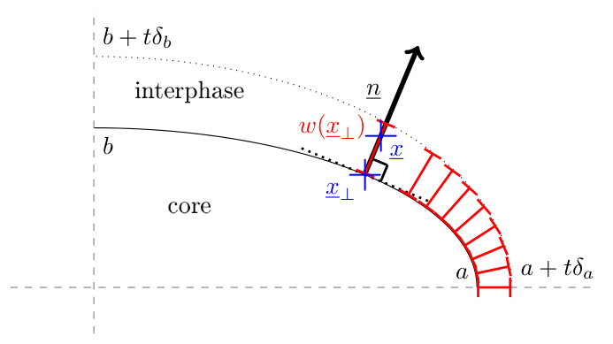
Once in possession of an equivalent conductivity of the type Eq. 102, it is now time to discuss about, on the one hand, the identification of a relevant conductivity for the interphase keeping in mind that the thickness of the interphase is not uniform and, on the other hand, the choice of the shape of the ellipsoids defining \(\uu{S}^c\) and \(\uu{S}^{\mathcal{I}}\). The shape of the core is guided by that of the actual modelled particle but that of the external ellipsoid ruling the thickness distribution of the interphase is undetermined and shall be adjusted according to modelling hypotheses. The only constraint is that the thickness remains infinitesimal compared to the core dimensions. The idea here consists in introducing a parameter \(t\), having the dimension of a length, tending towards \(0\) (i.e. infinitesimal compared to the radii) and governing both the interphase conductivity still in the form Eq. 101 (for either LC or HC cases even if \(t\) is not the thickness anymore) and the shape of the external ellipsoid. Although the following reasoning could be followed for general ellipsoidal shapes, it is restricted to spheroids for the sake of simplicity and to allow further comparisons with the exact solution provided in Section 2. If \(a\) and \(b\) respectively denote the large and small radii of the core, the radii of the external spheroid (concentric and coaxial to the core) are defined by \(a+t\delta_a\) and \(b+t\delta_b\) so that \(t\delta_a\) and \(t\delta_b\) correspond to the thickness of the interphase along the large and small radii. These two independent dimensionless parameters \(\delta_a\) and \(\delta_b\) actually control how the external spheroid tends towards the core when \(t\) tends towards \(0\) and consequently the equivalent conductivity Eq. 102. Indeed in this expression of \(\uu{k}^{eq}\) the dependence of \(\uu{k}_{\mathcal{I}}\) on \(t\) is known in Eq. 101 but \(f_c\) and \(\uu{S}^{\mathcal{I}}\) are also functions of \(t\) through the values of the radii of the external spheroid (\(a+t\delta_a\) and \(b+t\delta_b\)). Before examining in details the influence of \(\delta_a\) and \(\delta_b\) on the limit of \(\uu{k}^{eq}\) when \(t\) tends towards \(0\), it is worth simplifying Eq. 102 by introducing the following parameters
\[ \wideeq{s=-\frac{\partial f_c}{\partial t}(t=0) \quad\textrm{and}\quad \uu{\Sigma}=\frac{\partial \uu{S}^{\mathcal{I}}}{\partial t}(t=0)} \tag{111}\]
Using these notations together with the expressions Eq. 101 of \(k_{\mathcal{I}}\) leads to the following limits of \(\uu{k}^{eq}\) or \(\uu{r}^{eq}={\uu{k}^{eq}}^{-1}\) when \(t\) tends towards \(0\) in the LC and HC cases
\[ \wideeq{\uu{r}_{LC}^{eq}={\uu{k}_{LC}^{eq}}^{-1}=\uu{r}_c+\alpha\, \left(s\,\uu{S}^c-\uu{\Sigma}\right) \quad\textrm{and}\quad \uu{k}_{HC}^{eq}={\uu{r}_{HC}^{eq}}^{-1}=\uu{k}_c+\beta\, \left( s\,\idd-(s\,\uu{S}^c-\uu{\Sigma}) \right)} \tag{112}\]
where the tensor \(\uu{\Sigma}\) is practically calculated by observing from Eq. 164165 that \(\uu{S}^{\mathcal{I}}\) actually depends on \(t\) through the aspect ratio (\(\omega(t)=\frac{a+t\delta_a}{b+t\delta_b}\) in the prolate case and \(\omega(t)=\frac{b+t\delta_b}{a+t\delta_a}\) in the oblate case)
\[ \wideeq{\uu{\Sigma} =\frac{\partial \uu{S}^{\mathcal{I}}}{\partial \omega} \frac{\partial \omega}{\partial t}(t=0)} \tag{113}\]
As the derivative of \(\uu{S}^{\mathcal{I}}\) with respect to \(\omega\) is provided by Eq. 166167, it follows that the estimates Eq. 112 are totally determined by the geometrical parameters \(s=-\frac{\partial f_c}{\partial t}\) and \(\frac{\partial \omega}{\partial t}\) at \(t=0\) which both write as functions of \(\delta_a\) and \(\delta_b\) (for the sake of simplicy \(\omega\) without argument denotes the aspect ratio at \(t=0\) i.e. the aspect ratio of the core spheroid)
\[ \wideeq{f_c(t)= \left\{ \begin{array}{ll} \frac{a\,b^2}{(a+t\delta_a)\,(b+t\delta_b)^2} &\quad\textrm{(prolate)}\\ \frac{a^2\,b}{(a+t\delta_a)^2\,(b+t\delta_b)} &\quad\textrm{(oblate)} \end{array} \right. \quad\Rightarrow\quad s=-\frac{\partial f_c}{\partial t}(t=0)= \left\{ \begin{array}{ll} \frac{1}{b}\,\left(\frac{\delta_a}{\omega}+2\,\delta_b\right) &\quad\textrm{(prolate)}\\ \frac{1}{b}\,\left(2\,\delta_a\,\omega+\delta_b\right) &\quad\textrm{(oblate)} \end{array} \right.} \tag{114}\]
and
\[ \wideeq{\omega(t)= \left\{ \begin{array}{ll} \frac{a+t\delta_a}{b+t\delta_b} &\quad\textrm{(prolate)}\\ \frac{b+t\delta_b}{a+t\delta_a} &\quad\textrm{(oblate)} \end{array} \right. \quad\Rightarrow\quad \frac{\partial \omega}{\partial t}(t=0)= \left\{ \begin{array}{ll} \frac{1}{b}\,\left(\delta_a-\delta_b\,\omega\right) &\quad\textrm{(prolate)}\\ \frac{\omega}{b}\,\left(\delta_b-\delta_a\,\omega\right) &\quad\textrm{(oblate)} \end{array} \right.} \tag{115}\]
As a consequence, the equivalent conductivities Eq. 112 are fully determined by any choice of the couple \((\delta_a,\delta_b)\). Alternatively, as two independent values are required to achieve the determination of the model, it may also be interesting for particular physical meanings to use \(s\) or \(\frac{\partial \omega}{\partial t}\) themselves or any relevant linear combination of \(\delta_a\) and \(\delta_b\) as control parameters. Several options of control parameters are detailed herebelow.
The choice of \(\delta_a\) and/or \(\delta_b\) amounts to a control of the thickness along the corresponding axis. For instance \(\delta_a=1\) gives \(t\) the status of interphase thickness along the major axis of the spheroid.
Imposing \(\frac{\partial \omega}{\partial t}=0\) means that the spheroids delimiting the interphase are similar. It implies a linear combination between \(\delta_a\) and \(\delta_b\)
\[ \wideeq{\frac{\partial \omega}{\partial t}=0 \textrm{ (similar spheroids)} \quad\Rightarrow\quad \left\{ \begin{array}{ll} \delta_a=\delta_b\,\omega &\quad\textrm{(prolate)}\\ \delta_b=\delta_a\,\omega &\quad\textrm{(oblate)} \end{array} \right.} \tag{116}\]
As an alternative option, the spheroids delimiting the interphase can be chosen as confocal, which means that \((a+t\delta_a)^2-(b+t\delta_b)^2\) does not depend on \(t\) for \(t\) close to \(0\), implying \(a\delta_a=b\delta_b\)
\[ \wideeq{a\delta_a=b\delta_b \textrm{ (confocal spheroids)} \quad\Rightarrow\quad \left\{ \begin{array}{ll} \delta_b=\delta_a\,\omega &\quad\textrm{(prolate)}\\ \delta_a=\delta_b\,\omega &\quad\textrm{(oblate)} \end{array} \right.} \tag{117}\]
Another relevant option to control the model of equivalent conductivity relies on the parameter \(s\) itself. The definition Eq. 111 clearly shows that \(s\) is physically consistent with a ratio between a surface and a volume. More particularly, if \(t\) was actually the thickness of the interphase, \(s\) would be defined as the specific surface \(\sigma_v\) given in Eq. 131. Even if \(t\) does not define a uniform thickness here, it is tempting to impose \(s=\sigma_v\). Besides the geometrical relevance of this choice, it is worth pointing out the consistency between the interface models Eq. 93 and Eq. 99 on the one hand and the interphase ones Eq. 112 on the other hand provided that \(\uu{R}\) (of trace \(\sigma_v\)) is identified to \(s\,\uu{S}^c-\uu{\Sigma}\) (of trace \(s\)).
Various models are implemented in the next paragraph, each of them being based on a choice of two independent control parameters among those listed hereabove. In addition the result proven in Section 11 eventually allows to exploit any equivalent conductivity provided by these models in Eshelby-based concentration relationships Eq. 91 just as if the overall spheroid was homogeneous.
4.3.3 Comparisons of models
This paragraph aims at proposing a comparison between a selection of approximated models of equivalent conductivity based on the descriptions given in Section 4.3.1 and in Section 4.3.2 and the exact solution as unfolded in Section 2 considering various levels of conductivity of the reference medium. Indeed although the approximated models do not depend on the latter, it is not the case of the exact solution. This dependence on the reference medium of the exact solution may question the conditions of relevance of approximated models. On the one hand, in the LC case, Fig. 7 and Fig. 8 represent respectively the transverse and axial equivalent resistivities normalized by the resistive effect of the interface \(\alpha/b\) plotted against the aspect ratio of the spheroid. On the other hand, in the HC case, Fig. 9 and Fig. 10 represent respectively the transverse and axial equivalent conductivities normalized by the conductive effect of the interface \(\beta/b\) plotted against the aspect ratio of the spheroid. Before entering into the details of the approximated models, it is worth remarking in Fig. 710 that the exact solutions (denoted series) actually depend on the reference medium in a way that differs from a component to another and from a type of interface to another. But it may be noticed that all the curves related to the exact solution of a given figure follow a rather similar trend and remain within the same order of magnitude for a given aspect ratio.
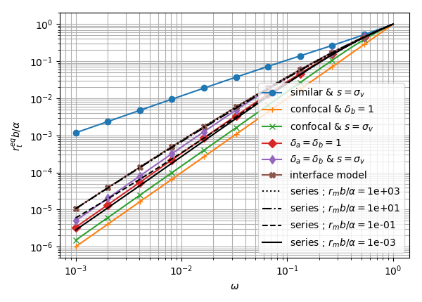
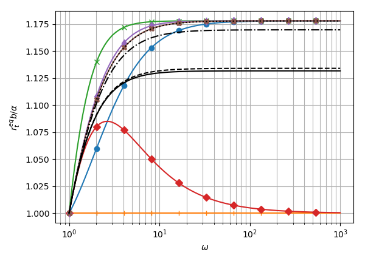
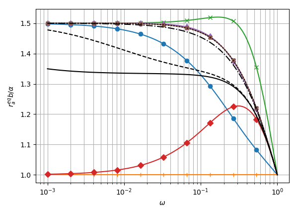
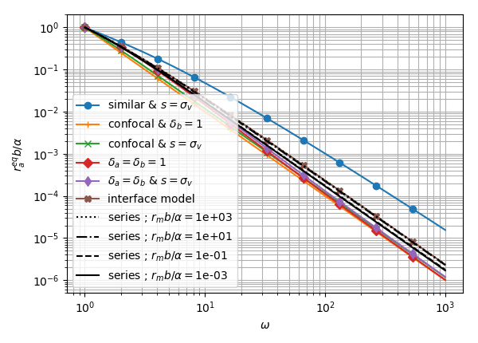
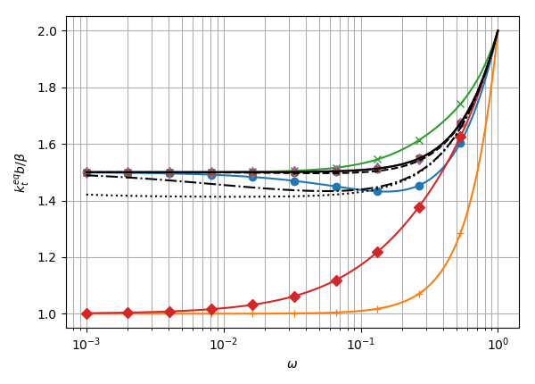
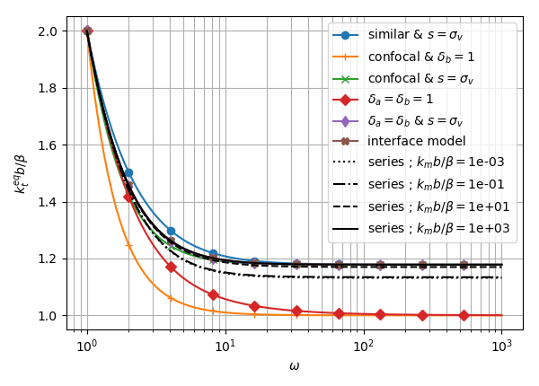
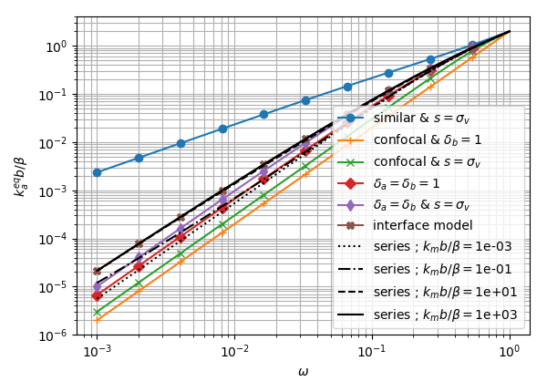
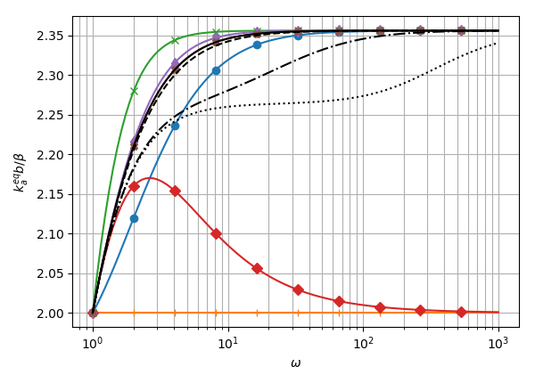
Among all possible models, the following ones are considered as a matter of comparison with the exact solution of Section 2 and plotted in Fig. 7 to Fig. 10
similar spheroids delimiting the interphase Eq. 116 and specific surface driving the thickness parameter (\(s=\sigma_v\)) This model is not really satisfactory since its trends in Fig. 7 (oblate), Fig. 8 (prolate) and Fig. 10 (oblate) remain far from the exact solution. Moreover the evolutions around the spherical case (\(\omega=1\)) almost never comply with the exact solutions either. Other models based on similar spheroids and for instance one of the thicknesses (condition on \(\delta_a\) or \(\delta_b\)) are not represented since they behave even worse than this one.
confocal spheroids delimiting the interphase Eq. 117 and small radius control (\(\delta_b=1\)) Combining Eq. 117 and \(\delta_b=1\) in Eq. 114 and Eq. 115 provides
\[ \wideeq{s= \left\{ \begin{array}{l} \frac{1}{b}\,\left(2+\frac{1}{\omega^2}\right) \\ \frac{1}{b}\,\left(1+2\,\omega^2\right) \end{array} \right. \quad\textrm{and}\quad \frac{\partial \omega}{\partial t}= \left\{ \begin{array}{ll} \frac{1}{b}\,\left(\frac{1}{\omega}-\omega\right) &\quad\textrm{(prolate)}\\ \frac{\omega}{b}\,\left(1-\omega^2\right) &\quad\textrm{(oblate)} \end{array} \right.} \tag{118}\]
The figures put well in evidence that this model is not accurate enough in comparison to the exact solutions whatever the reference medium. Moreover replacing the small radius control \(\delta_b=1\) by a large radius control \(\delta_a=1\) leads to inconsistent results since in this case \(\delta_b\)Eq. 117 and \(s\)Eq. 114 as well as \(\frac{\partial \omega}{\partial t}\)Eq. 115 tend to infinite values for extreme cases of needles and flat spheroids.
confocal spheroids delimiting the interphase Eq. 117 and specific surface driving the thickness parameter (\(s=\sigma_v\)) Taking advantage of the relationships Eq. 117 and Eq. 114, \(\frac{\partial \omega}{\partial t}\) can be calculated as a function of \(\sigma_v\) so that the following control parameters are valid for oblate or prolate spheroids
\[ \wideeq{s=\sigma_v \quad\textrm{and}\quad \frac{\partial \omega}{\partial t}= \frac{\omega\left(1-\omega^2\right)}{1+2\,\omega^2}\,\sigma_v} \tag{119}\]
This set of assumptions is consistent with the model of coated particle presented in [34] for a general ellipsoidal shape and exploited in several homogenization schemes. The Fig. 7 to Fig. 10 show that this model could be acceptable for cases of spheroids rather far from the spherical shape but the trends of the equivalent conductivity do not really comply with the slopes of the exact solutions in the vicinity of \(\omega=1\) in Fig. 7 prolate, Fig. 8 oblate, Fig. 9 oblate and prolate and Fig. 10 prolate. The latter figures correspond to cases where the equivalent resistivity (if LC interface) or conductivity (if HC interface) tends towards a non-zero limit whereas the other figures are presented with a logarithmic scale on the y-axis in order to capture the order of convergence towards 0.
double radius control (\(\delta_a=\delta_b=1\)) Exploiting \(\delta_a=\delta_b=1\) in Eq. 114 and Eq. 115 gives the parameters to introduce in Eq. 112
\[ \wideeq{s= \left\{ \begin{array}{l} \frac{1}{b}\,\left(2+\frac{1}{\omega}\right) \\ \frac{1}{b}\,\left(1+2\,\omega\right) \end{array} \right. \quad\textrm{and}\quad \frac{\partial \omega}{\partial t}= \left\{ \begin{array}{ll} \frac{1}{b}\,\left(1-\omega\right) &\quad\textrm{(prolate)}\\ \frac{\omega}{b}\,\left(1-\omega\right) &\quad\textrm{(oblate)} \end{array} \right.} \tag{120}\]
This model means that \(t\) is the thickness at both major and minor axes but it is worth recalling that the interphase thickness here remains not uniform so far, even if \(t\) is infinitesimal as mistakenly argued in [33]. By the way if the thickness was uniform \(s\) given in Eq. 120 should coincide with \(\sigma_v\)Eq. 131, which is not the case when the aspect ratio differs from 1. Keeping an aspect ratio in a close vicinity of the spherical case, the Fig. 7 to Fig. 10 show that this model could be acceptable as already put in evidence in [35] using \(0.25\leq\omega\leq 2\). However, when the aspect ratio is far from~1, the discrepancy between this model and the exact solutions increases in cases where the equivalent resistivity (LC interface) or conductivity (HC interface) tends towards a non-zero limit (Fig. 7 prolate, Fig. 8 oblate, Fig. 9 oblate and prolate and Fig. 10 prolate). Interestingly it is to be noticed that in these cases the interval of validity of the present model is roughly the complementary of the previous one (based on confocal spheroids and a specific surface to control the thickness) which was observed to give more reliable estimates far from the spherical shape. As already emphasized in Section 4.3.2, the assumption of double radius control contains two independent parameters and thus definitely determines the values of \(s\) and \(\frac{\partial \omega}{\partial t}\) and eventually the equivalent conductivity Eq. 112. Nevertheless the equivalent conductivity formulated in [32] and [33] corresponds to a superposition of \(\delta_a=\delta_b=1\) together with \(\uu{\Sigma}=\uu{0}\) (i.e. \(\frac{\partial \omega}{\partial t}=0\)). This set of assumptions is geometrically inconsistent since it comes from Eq. 115 that \(\frac{\partial \omega}{\partial t}\neq 0\) when \(\delta_a=\delta_b=1\) and \(\omega\neq 1\); this is certainly the main reason why the model of [32] has been criticized in [42]. The appropriate correction with the right value of \(\frac{\partial \omega}{\partial t}\) from Eq. 115 actually provides a far more acceptable result.
double radius control (\(\delta_a=\delta_b\)) and specific surface driving the thickness parameter (\(s=\sigma_v\)) Using \(\delta_a=\delta_b\) in Eq. 114 with \(s=\sigma_v\) and Eq. 115 allows to eliminate \(\delta_a\) and \(\delta_b\) so that the following parameters to introduce in Eq. 112 are obtained for both prolate and oblate spheroids
\[ \wideeq{s=\sigma_v \quad\textrm{and}\quad \frac{\partial \omega}{\partial t}= \frac{\omega\left(1-\omega\right)}{1+2\,\omega}\,\sigma_v} \tag{121}\]
In this model, the thicknesses at both small and large radii are imposed to be equal to one another but not equal to~\(t\). For already mentioned reasons the thickness is however not uniform but its value at radii (i.e. \(t\delta_a=t\delta_b\)) is somehow corrected by comparison to the previous model imposing \(\delta_a=\delta_b=1\) insofar as it forces the consistency of the thickness with \(s=\sigma_v\). The Fig. 7 to Fig. 10 clearly show that this model gives the best estimate of equivalent conductivity among those based on a volume interphase although it can obviously not capture the dependence on the reference medium.
interface model The interface model as denominated in the legends of Fig. 7 to Fig. 10 corresponds to the expressions obtained in Eq. 93 for LC and in Eq. 99 for HC interface. This model remarkably fits well to the exact solution calculated for \(r_m b/\alpha\) (LC) or \(k_m b/\beta\) (HC) tending towards infinity. This result could have been anticipated since these limits correspond to cases where the effect of the interface becomes negligible relatively to the reference medium, increasing then the validity of the assumption of uniform solution within the spheroid as exploited in Section 4.3.1. For any finite value of the reference medium, in absence of an efficient strategy to simplify the exact solution while keeping a dependence of the reference medium, it seems that this interface model provides at first sight the most reliable estimate. This model also brings indications about the behavior of the equivalent spheroid for extreme aspect ratios thanks to Eq. 97 and Eq. 100 at least in the case of weak interface effect for which the approximate models are assumed to be close to the exact solutions. Nevertheless these limits should be considered with great care. Indeed the limit of \(R_t\) when \(\omega\) tends towards infinity with a given transverse radius \(b\) is \(3\pi/(8b)\) and is thus different from the direct application of the integral Eq. 93 over a circular cylinder which leads to \(1/b\). This means that the transverse solution of an infinite circular cylinder is not obtained here as the limit of the prolate spheroid case which retains even asymptotically its 3D status due to non negligible flow at the tip of the large axis. It is however interesting to notice that the transverse behavior of the infinite circular cylinder is well captured by the two models imposing \(\delta_b=1\) in Fig. 7 and Fig. 9 for \(\omega\) tending towards infinity, which highlights the expected important role played by the transverse axis (small radius) in this case. A similar reasoning can be applied to the very flat spheroid and the axial conductivity. In this case indeed \(R_a\)Eq. 97 tends towards \(3/(2b)\) whereas the application of the integral Eq. 93 on the space delimited by two infinite planes of interdistance \(2b\) leads to \(1/b\). Here again the conductivity of this last geometry is not obtained by taking the limit of the flat spheroid solution. However the axial conductivity of the space between infinite planes and the major role played by the small radius \(b\) are again well captured by the models imposing \(\delta_b=1\) in Fig. 8 and Fig. 10 for \(\omega\) tending towards 0.
5 Conclusion
The work presented in this paper has been guided by the research of an efficient strategy to enrich the sets of heterogeneities usable in homogenization schemes for thermal conduction with composite spheroidal particles. The analytical solution to the generalized Eshelby problem of a confocal multilayer spheroid with imperfect interfaces between layers has first been provided in the form of different infinite series of spheroidal harmonics for both axial and transverse macroscopic temperature gradients. The coefficients of the series have been identified thanks to a thoroughly detailed procedure allowing a numerical implementation and the convergence of some terms has been carefully justified. The second part of the paper has been dedicated to a specific focus on the case of confocal multilayer spheroid with perfect interfaces. A reformulation of the exact solution expressed this time as finite series of harmonics has been proposed based on the concept of equivalent conductivity satisfying a recursive layer-by-layer algorithm. In particular it has been shown that such a multilayer particle with perfect interfaces between layers could be rigorously replaced by the overall spheroid of uniform transversely isotropic conductivity independently from the properties of the embedding material. However this result of existence of an intrinsic equivalent conduction does not a priori subsist in presence of imperfect interfaces. For this reason and the actual interest for real materials, the issue of the determination of an equivalent property which would be easier to calculate than the series of harmonics has been considered in the third part for the simple case of a uniform spheroid surrounded by an imperfect interface. After some general discussions about the notion of equivalent particle leading to the proof that a composite spheroidal particle could actually be treated as a homogeneous one in terms of expressions of the average concentration tensors, some approximated models have been constructed. These models rely on a replacement of the heterogeneous temperature and heat flux fields within the spheroid by their averages, which is rigorously satisfied when the interface effect vanishes due to Eshelby’s result but remains an approximation in presence of an interface. Describing first the interface as a two-dimensional domain has led to already published expressions of concentration tensors. Another approach has consisted in viewing the interface as a thin interphase and applying solutions of multilayer spheroids. Thanks to a parametrization of the shape of this interphase by two scalars, a set of approximated models have been derived. This approach has allowed to discuss about the validity of models published in the literature and to build new ones. Considering oblate and prolate spheroids and LC and HC interfaces, a comparison has finally been carried out between the exact solution and the approximated models in order to highlight the conditions of validity and relevance of the latter. In particular, although independent from the matrix conductivity, it has been put in evidence that the models based on a surface description of the interface probably remain the most accurate ones. It is worth adding that the interest of all the approximated models relies not only on their simplicity but also on their ability to be extended to more general situations such as anisotropy.
Acknowledgements
This work has benefited from fruitful discussions with Prof. Albert Giraud (GeoRessources Laboratory, Universit'e de Lorraine) which are gratefully acknowledged.
6 Spheroidal coordinates
In the classical cartesian frame of the 3D space \((\ve{1},\ve{2},\ve{3})\), the position vector writes \(\x=x_i\ve{i}\) by means of the cartesian coordinates \(x_i\). The prolate spheroidal coordinates of revolution axis \(\ve{3}\) are defined by the triplet \((\varphi,p,q)\) [39] such that
\[ \wideeq{\left\{ \begin{array}{rcl} x_1&=&c\,\sqrt{1-p^2}\,\sqrt{q^2-1}\,\cos\varphi\\ x_2&=&c\,\sqrt{1-p^2}\,\sqrt{q^2-1}\,\sin\varphi\\ x_3&=&c\,p\,q \end{array} \right.} \tag{122}\]
with \(0\leq\varphi\leq 2\pi\), \(-1\leq p\leq 1\), \(q\geq 1\) and \(c>0\). In other words, the position vector writes
\[ \wideeq{\x=c\,\left(\sqrt{1-p^2}\,\sqrt{q^2-1}\,\uv{u}_\varphi+ p\,q\,\ve{3}\right) \quad\textrm{with}\quad \uv{u}_\varphi=\cos\varphi\,\ve{1}+\sin\varphi\,\ve{2}} \tag{123}\]
which can also be expressed in terms of spheroidal harmonics by means of Legendre functions of the first kind Eq. 134
\[ \wideeq{\x=c\,\left( -P_1^1(p)\,P_1^1(q)\,\uv{u}_\varphi+ P_1(p)\,P_1(q)\,\ve{3} \right)} \tag{124}\]
The iso-\(q\) surfaces define confocal spheroids of linear eccentricity \(c\) (semi focal distance), aspect ratio \(\omega\), semi major axis \(a\) (i.e. axial radius \(\rho_a\)) along \(\ve{3}\) and semi minor axis \(b\) (i.e. transverse radius \(\rho_t\)) in the plane \((\ve{1},\ve{2})\) given by
\[ \wideeq{\omega=\frac{q}{\sqrt{q^2-1}}>1 \quad\left(q=\frac{\omega}{\sqrt{\omega^2-1}}\right), \quad a=\rho_a=c\,q, \quad b=\rho_t=c\,\sqrt{q^2-1}} \tag{125}\]
The formal replacement \(c=-\imath\bar{c}\) with \(\bar{c}>0\) and \(q=\imath\tau\) with \(\tau>0\) and the convention \(\sqrt{-1}=\imath\) in Eq. 122 allows to define the oblate spheroidal coordinates \((\varphi,p,\tau)\) of revolution axis \(\ve{3}\) corresponding to the linear eccentricity \(\bar{c}\). It is worth mentioning that all the results of this paper remain valid by applying this variable replacement and inverting the roles played by \(a\) and \(b\) in Eq. 125 in order to keep their respective definitions of semi major and semi minor axes while \(\rho_a\) and \(\rho_t\) stll respectively denote the axial and transverse radii
\[ \wideeq{\omega=\frac{\tau}{\sqrt{\tau^2+1}}<1 \quad\left(\tau=\frac{\omega}{\sqrt{1-\omega^2}}\right), \quad b=\rho_a=\bar{c}\,\tau \quad a=\rho_t=\bar{c}\,\sqrt{\tau^2+1},} \tag{126}\]
The natural basis related to the spheroidal coordinates is defined by the vectors \(\uv{a}_\lambda=\partial\x/\partial\lambda\) where \(\lambda=\varphi,p\) or \(q\) and the corresponding orthonormal basis \(\ve{\lambda}\) and Lam'e coefficients \(\chi_\lambda\) such that \(\uv{a}_\lambda=\chi_\lambda\ve{\lambda}\) are given by
\[ \wideeq{\left\{ \begin{array}{rcl} \chi_\varphi &=&c\,\sqrt{1-p^2}\,\sqrt{q^2-1}\\ \chi_p&=&c\,\sqrt{\frac{q^2-p^2}{1-p^2}}\\ \chi_q&=&c\,\sqrt{\frac{q^2-p^2}{q^2-1}} \end{array} \right. \quad \left\{ \begin{array}{rcl} \ve{\varphi}&=&-\sin\varphi\,\ve{1}+\cos\varphi\,\ve{2}\\ \ve{p}&=&\frac{-p\,\sqrt{q^2-1}\,\uv{u}_\varphi+ q\,\sqrt{1-p^2}\,\ve{3}}{\sqrt{q^2-p^2}}\\ \ve{q}&=&\frac{q\,\sqrt{1-p^2}\,\uv{u}_\varphi+ p\,\sqrt{q^2-1}\,\ve{3}}{\sqrt{q^2-p^2}} \end{array} \right.} \tag{127}\]
which implies the following expressions of the infinitesimal volume element \(\ud\Omega\) and surface element \(\ud S_q\) on an iso-\(q\) spheroid
\[ \wideeq{\left\{ \begin{array}{rcl} \ud\Omega &=&\chi_\varphi \chi_p \chi_q \ud \varphi \ud p \ud q =c^3 (q^2-p^2) \ud \varphi \ud p \ud q\\ \ud S_q &=&\chi_\varphi \chi_p \ud \varphi \ud p =c^2 \sqrt{q^2-p^2} \sqrt{q^2-1} \ud \varphi \ud p\\ \end{array} \right.} \tag{128}\]
The surface of a prolate (resp. oblate) spheroid is given by integration of \(\ud S_q\)Eq. 128 over the rectangle \((\varphi,p)\in[0,2\pi]\times[-1,1]\) for a given value of \(q\) (resp. \(\tau\))
\[ \wideeq{S= \left\{ \begin{array}{lcll} 2\,\pi\,c^2\,\sqrt{q^2-1}\, \left( \sqrt{q^2-1}+q^2\,\arcsin{\frac{1}{q}} \right) &=& 2\,\pi\,b^2\, \left( 1+\frac{\omega^2}{\sqrt{\omega^2-1}}\,\arctan\sqrt{\omega^2-1} \right) &\quad\textrm{(prolate)}\\ 2\,\pi\,\bar{c}^2\,\sqrt{\tau^2+1}\, \left( \sqrt{\tau^2+1}+\tau^2\,\arcsinh{\frac{1}{\tau}} \right) &=& 2\,\pi\,a^2\, \left( 1+\frac{\omega^2}{\sqrt{1-\omega^2}}\,\arctanh\sqrt{1-\omega^2} \right) &\quad\textrm{(oblate)} \end{array} \right.} \tag{129}\]
and the volume is
\[ \wideeq{V= \left\{ \begin{array}{lcll} \frac{4}{3}\,\pi\,c^3\,q\,\left(q^2-1\right) &=& \frac{4}{3}\,\pi\,b^3\,\omega &\quad\textrm{(prolate)}\\ \frac{4}{3}\,\pi\,\bar{c}^3\,\tau\,\left(\tau^2+1\right) &=& \frac{4}{3}\,\pi\,a^3\,\omega &\quad\textrm{(oblate)} \end{array} \right.} \tag{130}\]
so that the specific surface writes
\[ \wideeq{\sigma_v=\frac{S}{V}= \left\{ \begin{array}{lcll} \frac{3}{2\,c\,q}\, \left(1+\frac{q^2}{\sqrt{q^2-1}}\,\arcsin{\frac{1}{q}}\right) &=& \frac{3}{2\,a}\, \left( 1+\frac{\omega^2}{\sqrt{\omega^2-1}}\,\arctan\sqrt{\omega^2-1} \right) &\quad\textrm{(prolate)}\\ \frac{3}{2\,\bar{c}\,\tau}\, \left(1+\frac{\tau^2}{\sqrt{\tau^2+1}}\,\arcsinh{\frac{1}{\tau}}\right) &=& \frac{3}{2\,b}\, \left( 1+\frac{\omega^2}{\sqrt{1-\omega^2}}\,\arctanh\sqrt{1-\omega^2} \right) &\quad\textrm{(oblate)} \end{array} \right.} \tag{131}\]
In this coordinate system, the surface Laplacian over an iso-\(q\) spheroid writes
\[ \wideeq{\begin{array}{rcl} \Delta_{\mathcal{S}} f&=& \frac{1}{\chi_\varphi \chi_p} \Bigg( \frac{\partial}{\partial\varphi} \left(\frac{\chi_p}{\chi_\varphi} \frac{\partial f}{\partial\varphi}\right) + \frac{\partial}{\partial p} \left(\frac{\chi_\varphi}{\chi_p} \frac{\partial f}{\partial p}\right) \Bigg) \\ &=&\frac{1}{c^2}\left( \frac{1}{(1-p^2)\,(q^2-1)}\,\frac{\partial^2 f}{\partial\varphi^2} + \frac{1}{\sqrt{q^2-p^2}}\,\frac{\partial}{\partial p} \left(\frac{1-p^2}{\sqrt{q^2-p^2}}\,\frac{\partial f}{\partial p} \right) \right) \end{array}} \tag{132}\]
7 Calculation of integrals
In this appendix, \(P_n\) (also written \(P_n^0\)) denotes the Legendre polynomial of degree \(n\) and \(P_n^m\) the associated Legendre function of the first kind of degree \(n\) and order \(m\). The following relationships are first recalled for practical convenience [40]
\[ \wideeq{P_0(x)=1 \;;\; P_1(x)=x} \tag{133}\]
\[ \wideeq{\begin{aligned} &P_n^m(x)= \left\{ \begin{array}{rl} \left(-\sqrt{1-x^2}\right)^m\, \frac{\ud^m P_n(x)}{\ud x^m} & (|x|\leq 1)\\ \left(\sqrt{x^2-1}\right)^m\, \frac{\ud^m P_n(x)}{\ud x^m} & (x>1) \end{array} \right. \end{aligned}} \tag{134}\]
\[ \wideeq{P_{n+1}^m(x)=\frac{(2\,n+1)\,x\,P_n^m(x)-(n+m)\,P_{n-1}^m(x)}{n-m+1} \quad(n\geq 1)} \tag{135}\]
\[ \wideeq{P_{n+1}^{m'}(x)=\frac{(2\,n+1)\,\left[P_n^m(x)+x\,P_n^{m'}(x)\right] -(n+m)\,P_{n-1}^{m'}(x)}{n-m+1} \quad(n\geq 1)} \tag{136}\]
\[ \wideeq{(1-x^2)\,P_n''(x)=2\,x\,P_n'(x)+n\,(n+1)\,P_n(x)} \tag{137}\]
\[ \wideeq{\int_{-1}^{1}P_n^m(x)\,P_r^s(x)\,\ud x=\frac{2}{2\,n+1}\,\frac{(n+m)!}{(n-m)!}\,\delta_{nr}\,\delta_{ms} \quad(n\geq m)} \tag{138}\]
It may also be useful to recall some of the main formulas allowing to calculate the Legendre functions of the second kind of degree \(n\) denoted by \(Q_n\) or \(Q_n^0\) as well as the associated Legendre functions of the second kind of degree \(n\) and order \(m\) denoted by \(Q_n^m\) [40]
\[ \wideeq{\begin{aligned} &Q_0(x)=\left\{ \begin{array}{rl} \arctanh(x) & (|x|\leq 1)\\ \arccoth(x) & (x>1) \end{array} \right. \end{aligned}} \tag{139}\]
\[ \wideeq{Q_1(x)=x\,Q_0(x)-1} \tag{140}\]
\[ \wideeq{Q_n(x)=P_n(x)\,Q_0(x)-\sum_{k=1}^n\frac{P_{k-1}(x)\,P_{n-k}(x)}{k} \quad(n\geq 2)} \tag{141}\]
\[ \wideeq{\begin{aligned} &Q_n^m(x)= \left\{ \begin{array}{rl} \left(-\sqrt{1-x^2}\right)^m\, \frac{\ud^m Q_n(x)}{\ud x^m} & (|x|\leq 1)\\ \left(\sqrt{x^2-1}\right)^m\, \frac{\ud^m Q_n(x)}{\ud x^m} & (x>1) \end{array} \right. \end{aligned}} \tag{142}\]
\[ \wideeq{Q_{n+1}^m(x)=\frac{(2\,n+1)\,x\,Q_n^m(x)-(n+m)\,Q_{n-1}^m(x)}{n-m+1} \quad(n\geq 2)} \tag{143}\]
\[ \wideeq{Q_{n+1}^{m'}(x)=\frac{(2\,n+1)\,\left[Q_n^m(x)+x\,Q_n^{m'}(x)\right] -(n+m)\,Q_{n-1}^{m'}(x)}{n-m+1} \quad(n\geq 2)} \tag{144}\]
\[ \wideeq{W_k(q)=\int_{-1}^{1} \frac{x^{2\,k}} {\sqrt{q^2-x^2}}\ud x =q^{2\,k}\int_{-\arcsin{\frac{1}{q}}}^{\arcsin{\frac{1}{q}}} \sin^{2\,k}{\theta}\ud \theta \quad(q>1)} \tag{145}\]
Considering the power series \(\frac{1}{\sqrt{1-z^2}}= \sum_{n=0}^\infty \frac{(1/2)_n}{n!}z^{2n}\) (of radius of convergence \(1\)) where \((\lambda)_n=\frac{\Gamma(\lambda+n)}{\Gamma(\lambda)}\) is the rising Pochhammer symbol and \(\Gamma\) the Gamma function, Eq. 145 can be rewritten as
\[ \wideeq{W_k(q)= \frac{2}{q}\,\sum_{n=0}^\infty \frac{(1/2)_n}{n!\,(2\,n+2\,k+1)}\,\frac{1}{q^{2\,n}} = \frac{2}{q\,(1+2\,k)}\, {}_2F_1 \left(\frac{1}{2},\frac{1}{2}+k;\frac{3}{2}+k; \frac{1}{q^2}\right)} \tag{146}\]
where \({}_2F_1\) is the Gaussian hypergeometric function \({}_2F_1 \left(a,b;c;z\right)= \sum_{n=0}^\infty \frac{(a)_n\,(b)_n}{(c)_n\,n!}z^{2n}\) which is implemented in many numerical libraries including arbitrary precision such as the library [48]. Moreover, Eq. 146 also allows to deduce the behavior of \(W_k(q)\) for high values of \(k\) for \(q>1\)
\[ \wideeq{W_k(q)\underset{k\to\infty}{\sim} \frac{1}{k\,\sqrt{q^2-1}}} \tag{147}\]
The following useful integrals can as well be identified
\[ \wideeq{Y_k(q)=\int_{-1}^{1} x^{2\,k}\, \sqrt{q^2-x^2}\ud x =q^2\,W_k(q)-W_{k+1}(q)} \tag{148}\]
As Legendre polynomials of even (respectively odd) degree are sums of even (respectively odd) monomials, it comes that
\[ \wideeq{I_{ij}(q)=\int_{-1}^{1} \frac{P_i(x)\,P_j(x)} {\sqrt{q^2-x^2}}\ud x = \left\{ \begin{array}{l} 0\quad\textrm{ if $(i+j)$ is odd}\\ \sum_{k=0}^{(i+j)/2} \gamma_{2\,k}^{i,j}\,W_k(q) \quad\textrm{ if $(i+j)$ is even} \end{array} \right.} \tag{149}\]
where \(\gamma_l^{i,j}\) is the coefficient of \(x^l\) in the polynomial \(P_i(x)P_j(x)\). Adopting the notation \(\gamma^{i,j}\) for the vector of components \(\gamma_l^{i,j}\) and the convention \(\gamma_l^{i,j}=0\) for \(l<0\) or \(l>i+j\), these coefficients can be practically built thanks to a recursive algorithm deduced from Eq. 135
\[ \wideeq{\left\{ \begin{array}{l} \gamma_l^{i+1,j}=\frac{2\,i+1}{i+1}\,\gamma_{l-1}^{i,j}-\frac{i}{i+1}\,\gamma_{l}^{i-1,j} \quad(0\leq l\leq i+j+1)\\ \gamma_l^{j,i}=\gamma_l^{i,j}\\ \gamma^{0,0}=[0]\quad ; \quad \gamma^{1,0}=[0,1]\quad ; \quad \gamma^{1,1}=[0,0,1] \end{array} \right.} \tag{150}\]
Note the practical calculation of integrals as \(I_{ij}\) has already been tackled in the literature (e.g. [20]) resorting to another algorithm than the recursive one Eq. 150 and without focusing on the numerical accuracy of the summation Eq. 149 especially if high orders are considered. This is precisely the purpose of Section 8 in which it is shown that this issue actually needs to be investigated.
Resorting to an integration by parts and Eq. 134 allows to write
\[ \wideeq{\begin{array}{rl} \displaystyle J_{ij}(q) &=\displaystyle\int_{-1}^{1} -P_i(x)\, \frac{\partial}{\partial x}\left( \frac{P_j'(x)\,(1-x^2)} {\sqrt{q^2-x^2}}\right)\ud x =\int_{-1}^{1} \frac{P_i'(x)\,P_j'(x)\,(1-x^2)} {\sqrt{q^2-x^2}}\ud x \\ &=\displaystyle \int_{-1}^{1} \frac{P_i^1(x)\,P_j^1(x)} {\sqrt{q^2-x^2}}\ud x \\ &= \left\{ \begin{array}{l} 0\quad\textrm{ if $(i+j)$ is odd}\\ \sum_{k=0}^{(i+j)/2-1} \delta_{2\,k}^{i,j}\,\Big(W_k(q)-W_{k+1}(q)\Big) \quad\textrm{ if $(i+j)$ is even} \end{array} \right. \end{array}} \tag{151}\]
where \(\delta_l^{i,j}\) is the coefficient of \(x^l\) in the polynomial \(P_i'(x)P_j'(x)\). In order to build a method to calculate \(\delta_l^{i,j}\), it is convenient first to introduce \(\eta_l^{i,j}\) as the coefficient of \(x^l\) in the polynomial \(P_i'(x)P_j(x)\). Unlike \(\gamma_l^{i,j}\) and \(\delta_l^{i,j}\), \(\eta_l^{i,j}\) is not symmetric with respect to \(i\) and \(j\) but the following recursive algorithm can be established thanks to Eq. 135 and Eq. 136
\[ \wideeq{\left\{ \begin{array}{l} \eta_l^{i+1,j}=\frac{2\,i+1}{i+1}\,\gamma_{l}^{i,j} +\frac{2\,i+1}{i+1}\,\eta_{l-1}^{i,j} -\frac{i}{i+1}\,\eta_{l}^{i-1,j} \quad(0\leq l\leq i+j)\\ \eta_l^{i,j+1}=\frac{2\,j+1}{j+1}\,\eta_{l-1}^{i,j} -\frac{j}{j+1}\,\eta_{l}^{i,j-1} \quad(0\leq l\leq i+j)\\ \eta^{0,0}=[0]\quad ; \quad \eta^{0,1}=[0]\quad ; \quad \eta^{1,0}=[1]\quad ; \quad \eta^{1,1}=[0,1] \end{array} \right.} \tag{152}\]
Finally the algorithm providing \(\delta_l^{i,j}\) writes
\[ \wideeq{\left\{ \begin{array}{l} \delta_l^{i+1,j}=\frac{2\,i+1}{i+1}\,\eta_{l}^{j,i} +\frac{2\,i+1}{i+1}\,\delta_{l-1}^{i,j} -\frac{i}{i+1}\,\delta_{l}^{i-1,j} \quad(0\leq l\leq i+j-1)\\ \delta_l^{j,i}=\delta_l^{i,j}\\ \delta^{0,0}=[0]\quad ; \quad \delta^{1,0}=[0]\quad ; \quad \delta^{1,1}=[1] \end{array} \right.} \tag{153}\]
\[ \wideeq{K_{ij}(q)=\int_{-1}^{1} \frac{P_i^{1'}(x)\,P_j^{1'}(x)\,(1-x^2)} {\sqrt{q^2-x^2}}\ud x} \tag{154}\]
The use of Eq. 134 and Eq. 137 allows to rewrite Eq. 154 under the form
\[ \wideeq{K_{ij}(q)=\int_{-1}^{1} \frac{P_i'(x)P_j'(x)x^2 -\Big(j(j+1)P_i'(x)P_j(x)+i(i+1)P_i(x)P_j'(x)\Big)x +i(i+1)j(j+1)P_i(x)P_j(x) } {\sqrt{q^2-x^2}}\ud x} \tag{155}\]
which is zero if \((i+j)\) is odd and can be transformed into the following summation if \((i+j)\) is even
\[ \wideeq{K_{ij}(q)=i(i+1)j(j+1)\gamma_0^{i,j}W_0(q)+ \sum_{k=1}^{(i+j)/2} \Big( \delta_{2k-2}^{i,j} -j(j+1)\eta_{2k-1}^{i,j} -i(i+1)\eta_{2k-1}^{j,i} +i(i+1)j(j+1)\gamma_{2k}^{i,j} \Big)W_k(q)} \tag{156}\]
Using Eq. 134, this integral writes
\[ \wideeq{\begin{array}{rl} \displaystyle L_{ij}(q) &=\displaystyle \int_{-1}^{1} \frac{P_i^1(x)\,P_j^1(x)\,\sqrt{q^2-x^2}} {1-x^2}\ud x =\int_{-1}^{1} P_i'(x)\,P_j'(x)\,\sqrt{q^2-x^2}\ud x \\ &= \left\{ \begin{array}{l} 0\quad\textrm{ if $(i+j)$ is odd}\\ \sum_{k=0}^{(i+j)/2-1} \delta_{2k}^{i,j} \Big( q^2\,W_k(q)-W_{k+1}(q) \Big) \quad\textrm{ if $(i+j)$ is even} \end{array} \right. \end{array}} \tag{157}\]
8 On the numerical convergence of the summations Eq. 149, Eq. 151, Eq. 156 and, Eq. 157
Exploiting Eq. 138, observing that \(\sqrt{q^2-1}\leq\sqrt{q^2-x^2}\leq q\) and using Cauchy-Schwartz inegality imply
\[ \wideeq{\frac{2}{2\,i+1}\,\frac{1}{q}\leq I_{ii}(q)\leq\frac{2}{2\,i+1}\,\frac{1}{\sqrt{q^2-1}} \quad\textrm{ and }\quad |I_{ij}(q)|\leq\sqrt{I_{ii}(q)}\,\sqrt{I_{jj}(q)}} \tag{158}\]
which allows to bound the order of magnitude of the definite positive symmetric matrix of general term \(I_{ij}(q)\)Eq. 149.
Despite its simplicity of implementation, the algorithm based on the summation Eq. 149 together with Eq. 150 and Eq. 146 hides the fact that some terms of the series in Eq. 149 are many orders of magnitude higher than \(I_{ij}(q)\) when \(i\) and \(j\) take large values, which may lead to numerical problems. It is then necessary to estimate the order of magnitude of the coefficients \(\gamma_l^{i,j}\) and eventually to resort to a specific numerical library such as to control the desired precision if the latter exceeds the standard one (\(16\) digits for double precision) in order to ensure the validity of the numerical calculation of the summation. The reasoning starts by the Rodrigues formula and the binomial expansion
\[ \wideeq{P_n(x)=\frac{1}{2^n\,n!}\,\frac{\ud^n}{\ud x^n}\left[\left(x^2-1)^n\right) \right] =\sum_{k\geq n/2}^n \underbrace{\frac{(-1)^{n-k}\,(2\,k)!}{2^n\,(n-k)!\,k!\,(2\,k-n)!}}_{\theta_k^n} \,x^{2\,k-n}} \tag{159}\]
The order of magnitude of \(\theta_k^n\) is then estimated for high values of \(k\) and \(n\) thanks to the Stirling formula 1
\[ \wideeq{\log{|\theta_k^n|}\underset{n\to\infty}{\sim} k\log{k}-(n-k)\,\log{(n-k)}-(2\,k-n)\,\log{(k-n/2)}} \tag{160}\]
An optimization of Eq. 160 with respect to \(k\) finally provides the maximal order of magnitude of \(\theta_k^n\)
\[ \wideeq{\max_k{\log{|\theta_k^n|}}\underset{n\to\infty}{\sim} n\,\frac{\log{\frac{2+\sqrt{2}}{2-\sqrt{2}}}}{2\,(\log{2}+\log{5})} \textrm{ reached for } (2\,k-n)\underset{n\to\infty}{\sim}\frac{n}{\sqrt{2}}} \tag{161}\]
It follows then that the maximal order of magnitude of the terms in the summation Eq. 149 is approximated by
\[ \max_{\substack{k\\ 0\leq i\leq n\\ 0\leq j\leq n}} {\log{|\gamma^{i,j}_{2\,k}|}}\underset{n \to\infty}{\sim} n\,\frac{\log{\frac{2+\sqrt{2}}{2-\sqrt{2}}}}{\log{2}+\log{5}} \leq 0.8\,n \tag{162}\]
Besides on the one hand it is shown from Eq. 147 that \(\log{W_k(q)}\underset{k\to\infty}{\sim}-\log{k}\) which is also equivalent to \(-\log{n}\) if Eq. 161 is considered. On the other hand it comes from Eq. 158 that \(\log{I_{nn}(q)}\underset{n\to\infty}{\sim}-\log{n}\). As a consequence, the construction of the terms \(I_{ij}(q)\) for \(0\leq i,j\leq n\) by means of the summation Eq. 149 requires to adopt a precision defined by a number of digits at least equal to \(\lceil 0.8 n\rceil\) where \(\lceil.\rceil\) denotes the ceiling function. This estimation is well confirmed by numerical calculations presented in Fig. 11 which shows the divergence of \(I_{ii}(q)\) as soon as the precision criterion is violated. It is then recommended not to use the summation formula Eq. 149 for \(i\) or \(j\) higher than 20 in the framework of double precision or to resort to a multiple precision library with a number of significant digits at least equal to \(\lceil 0.8 n\rceil\) if \(n\) denotes the maximal degree of Legendre polynomials.
The number of significant digits which are necessary to evaluate the other summations Eq. 151, Eq. 156 and Eq. 157 is obviously the same since the order of magnitude Eq. 161 is also valid for the coefficients of the derivative of Legendre polynomials and consequently the precision Eq. 162 also applies to the coefficients \(\eta_l^{i,j}\) and \(\delta_l^{i,j}\).
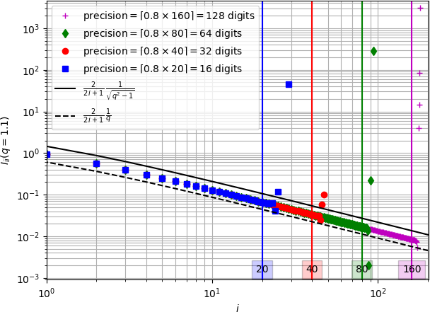
9 Eshelby problem in conduction
This section recalls the expression of the temperature gradient in a spheroidal inhomogeneity of conduction \(\uu{k}_{\mathcal{E}}\) embedded in an infinite matrix of conductivity \(\uu{k}_m\) submitted to a remote temperature gradient \(\uv{H}\). From the Eshelby result [2] applied to conductivity, the temperature gradient within the ellipsoidal inhomogeneity \(\mathcal E\) is homogeneous and writes [1]
\[ \wideeq{\forall\x\in{\mathcal{E}},\; \uv{h}(\x)=\left( \idd+\uu{S}^{\mathcal{E}}_m\cdot \uu{k}_m^{-1}\cdot\left(\uu{k}_{\mathcal{E}}-\uu{k}_m\right) \right)^{-1}\cdot\uv{H}} \tag{163}\]
where \(\uu{S}^{\mathcal{E}}_m\) is the Eshelby tensor depending only on the shape of the ellipsoid and the anisotropy of \(\uu{k}_m\). If \(\uu{k}_m\) is isotropic, \(\uu{S}^{\mathcal{E}}_m\) does not depend on the latter and can be simply denoted by \(\uu{S}^{\mathcal{E}}\). In the case of a spheroidal shape of axis parallel to \(\ve{3}\) and aspect ratio \(\omega\), \(\uu{S}^{\mathcal{E}}\) writes [45]
\[ \wideeq{\uu{S}^{\mathcal{E}}(\omega)= S_t^{\mathcal{E}}(\omega) \,\left(\idd-\ve{3}\otimes\ve{3}\right)+ S_a^{\mathcal{E}}(\omega)\,\ve{3}\otimes\ve{3}} \tag{164}\]
with (note that \(S_a^{\mathcal{E}}=1-2 S_t^{\mathcal{E}}\))
\[ \wideeq{S_t^{\mathcal{E}}(\omega)= \left\{ \begin{array}{ll} \frac{\omega\,\left(\omega\,\sqrt{\omega^2-1}-\arccosh{\omega}\right)} {2\,(\omega^2-1)^{3/2}}&\quad(\omega>1)\\ \frac{\omega\,\left(\arccos{\omega}-\omega\,\sqrt{1-\omega^2}\right)} {2\,(1-\omega^2)^{3/2}}&\quad(\omega<1)\\ \frac{1}{3}&\quad(\omega=1) \end{array} \right. \;;\; S_a^{\mathcal{E}}(\omega)= \left\{ \begin{array}{ll} \frac{\omega\,\arccosh{\omega}-\sqrt{\omega^2-1}} {(\omega^2-1)^{3/2}}&\quad(\omega>1)\\ \frac{\sqrt{1-\omega^2}-\omega\,\arccos{\omega}} {(1-\omega^2)^{3/2}}&\quad(\omega<1)\\ \frac{1}{3}&\quad(\omega=1) \end{array} \right.} \tag{165}\]
In addition the derivative of the Eshelby tensor Eq. 164 with respect to the aspect ratio writes (note that \(\frac{\partial S_a^{\mathcal{E}}}{\partial\omega}=-2 \frac{\partial S_t^{\mathcal{E}}}{\partial\omega}\))
\[ \wideeq{\frac{\partial\uu{S}^{\mathcal{E}}}{\partial\omega}(\omega)= \frac{\partial S_t^{\mathcal{E}}}{\partial\omega}(\omega) \,\left(\idd-\ve{3}\otimes\ve{3}\right)+ \frac{\partial S_a^{\mathcal{E}}}{\partial\omega}(\omega)\,\ve{3}\otimes\ve{3} = \frac{\partial S_t^{\mathcal{E}}}{\partial\omega}(\omega) \,\left(\idd-3\,\ve{3}\otimes\ve{3}\right)} \tag{166}\]
with
\[ \wideeq{\frac{\partial S_t^{\mathcal{E}}}{\partial\omega}(\omega)= \left\{ \begin{array}{ll} \frac{(1+2\,\omega^2)\,\arccosh{\omega}-3\,\omega\,\sqrt{\omega^2-1}} {2\,(\omega^2-1)^{5/2}} &\quad(\omega>1)\\ \frac{(1+2\,\omega^2)\,\arccos{\omega}-3\,\omega\,\sqrt{1-\omega^2}} {2\,(1-\omega^2)^{5/2}} &\quad(\omega<1)\\ \frac{2}{15}&\quad(\omega=1) \end{array} \right. \;;\; \frac{\partial S_a^{\mathcal{E}}}{\partial\omega}(\omega)= \left\{ \begin{array}{ll} \frac{3\,\omega\,\sqrt{\omega^2-1}-(1+2\,\omega^2)\,\arccosh{\omega}} {(\omega^2-1)^{5/2}} &\quad(\omega>1)\\ \frac{3\,\omega\,\sqrt{1-\omega^2}-(1+2\,\omega^2)\,\arccos{\omega}} {(1-\omega^2)^{5/2}} &\quad(\omega<1)\\ \frac{-4}{15}&\quad(\omega=1) \end{array} \right.} \tag{167}\]
10 Hadamard jump condition and interfacial operator
The problem considered here is the jump condition of temperature gradient and heat flux vector at an interface point between two zones in the framework of steady state thermal conduction (see Fig. 12). On both sides of this interface point the conductivity tensor is \(\uu{k}_m\) and a polarization tensor \(\uv{p}\) is defined only in the first zone.
Any discontinuity of a quantity \({\mathcal{X}}\) equal to \({\mathcal{X}}_1\) in the first zone and \({\mathcal{X}}_2\) in the second is denoted by \(\saut{\mathcal{X}}={\mathcal{X}}_2-{\mathcal{X}}_1\) and the unit normal vector \(\n\) is defined as directed towards the second zone (see Fig. 12).
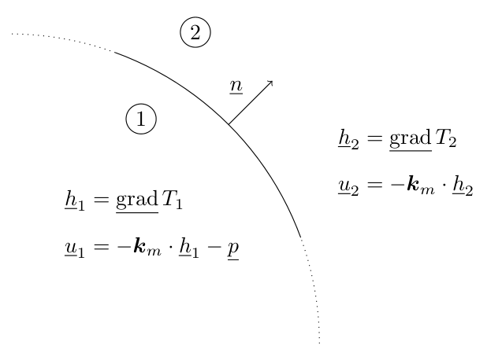
The so-called Hadamard jump condition ([49], [50]) results from the continuity of the temperature field over the interface which entails the continuity of the tangential components of the temperature gradient so that there exists a scalar \(\mu\) such that
\[ \wideeq{\saut{\uv{h}}=\saut{\gradu{T}}=\mu\,\n} \tag{168}\]
The determination of \(\mu\) is finally achieved by exploiting the continuity of the normal heat flux through the interface (\(\saut{\uv{u}}\cdot\n=0\))
\[ \wideeq{\mu\,\n\cdot\uu{k}_m\cdot\n= \n\cdot\uu{k}_m\cdot\saut{\uv{h}}= \n\cdot\left(\uv{p}-\saut{\uv{u}}\right) =\n\cdot\uv{p}} \tag{169}\]
Replacing \(\mu\)Eq. 169 in Eq. 168 defines the interfacial operator \(\uu{\Pi}_m(\n)\) ([51], [36], [29])
\[ \wideeq{\uv{h}_2=\uv{h}_1+\uu{\Pi}_m(\n)\cdot\uv{p} \quad\textrm{with}\quad \uu{\Pi}_m(\n)= \frac{\n\otimes\n}{\n\cdot\uu{k}_m\cdot\n}} \tag{170}\]
In the case of material discontinuity (i.e. conductivity \(\uu{k}_1\) in zone \(1\) and \(\uu{k}_2\) in zone \(2\)) without any polarization, \(\uv{u}_1\) also rewrites \(\uv{u}_1=-\uu{k}_2\cdot\uv{h}_1-\uv{p}\) with \(\uv{p}=(\uu{k}_1-\uu{k}_2)\cdot\uv{h}_1\) so that Eq. 170 applies with \(\uu{k}_m=\uu{k}_2\) and the fictitious polarization \(\uv{p}\)
\[ \wideeq{\uv{h}_2=\uv{h}_1+\uu{\Pi}_2(\n)\cdot\left(\uu{k}_1-\uu{k}_2\right)\cdot\uv{h}_1 \quad\textrm{with}\quad \uu{\Pi}_2(\n)= \frac{\n\otimes\n}{\n\cdot\uu{k}_2\cdot\n}} \tag{171}\]
11 Integral solution to the generalized Eshelby inclusion problem
This section recalls the solution to the Eshelby inclusion problem corresponding to an infinite domain occupied by a homogeneous material of conductivity \(\uu{k}_m\) embedding an ellipsoidal domain \({\mathcal{E}}\) of arbitrary (not necessarily uniform) conduction law and subjected to a remote temperature gradient \(\uv{H}\). Introducing a fictitious polarization vector field \(\uv{p}=-(\uu{k}_m\cdot\uv{h}+\uv{u})\) within \({\mathcal{E}}\), the solution writes in the sense of distributions (i.e. the polarization may incorporate surface Dirac distributions due to temperature discontinuities or concentrated heat flux)
\[ \wideeq{\uv{h}(\x)=\uv{H} -\int_{\x'\in{\mathcal{E}}}\uu{\Gamma}_m(\x-\x')\cdot\uv{p}(\x')\ud\Omega' =\uv{H}+\int_{\x'\in{\mathcal{E}}}\uu{\Gamma}_m(\x-\x')\cdot \left(\uu{k}_m\cdot\uv{h}(\x')+\uv{u}(\x')\right) \ud\Omega'} \tag{172}\]
where \(\uu{\Gamma}_m\) is the second-order Green tensor of the conduction problem related to \(\uu{k}_m\) in an infinite medium. If \(G_m\) denotes the Green function of the problem defined by \(\Div(\uu{k}_m\cdot\gradu{G_m})+\dirac_0=0\) and \(\lim_{\norm{\x}\to\infty}G_m(\x)=0\), then it comes that \(\uu{\Gamma}_m=\uu{S}^{\mathcal{E}}_m\cdot\uu{k}_m^{-1}\dirac_0 -\PV_{\mathcal{E}}\uu{\hess}{G_m}\). The first term is a singular part involving a 3D Dirac distribution \(\dirac_0\) and the Eshelby tensor \(\uu{S}^{\mathcal{E}}_m\) associated to \({\mathcal{E}}\) and the second term is a regular part involving a principal value operator excluding an infinitesimal ellipsoid similar to \({\mathcal{E}}\) around \(\uv{0}\) and the hessian (second-order tensor) of \(G_m\) [51]. Note that the shape of the ellipsoid is arbitrary in this expression provided that it is the same in the Eshelby tensor and the principal value definition.
From Eshelby [2], the second-order Green operator is known to obey to the following remarkable results [51]
\[ \wideeq{\forall\x\in\overset{\circ}{\mathcal{E}},\; \int_{\x'\in{\mathcal{E}}}\uu{\Gamma}_m(\x-\x')\ud\Omega'= \uu{S}^{\mathcal{E}}_m\cdot\uu{k}_m^{-1}} \tag{173}\]
\[ \wideeq{\forall\x\in\partial{\mathcal{E}}^+,\; \int_{\x'\in{\mathcal{E}}}\uu{\Gamma}_m(\x-\x')\ud\Omega'= \uu{S}^{\mathcal{E}}_m\cdot\uu{k}_m^{-1}-\uu{\Pi}_m(\n)} \tag{174}\]
where \(\overset{\circ}{\mathcal{E}}\) denotes the interior of \({\mathcal{E}}\) and \(\partial{\mathcal{E}}^+\) denotes the set of points which are located immediately on the external part of the boundary of \({\mathcal{E}}\). In the case of a uniform polarization vector within \({\mathcal{E}}\), Eq. 172 together with Eq. 173 ensure the uniformity of the temperature gradient within \({\mathcal{E}}\) and the term \(\uu{\Pi}_m(\n)\) in Eq. 174, where \(\n\) corresponds to the outward unit normal vector at point \(\x\), is consistent with the effect of the interfacial operator recalled in Eq. 170. The temperature gradient as well as the heat flux vector are therefore not expected to be uniform outside \({\mathcal{E}}\) even along \(\partial{\mathcal{E}}^+\).
Considering the symmetrical roles played by \(\x\) and \(\x'\) in the Green kernel i.e. \(\uu{\Gamma}_m(\x-\x')=\uu{\Gamma}_m(\x'-\x)\), Eq. 173 allows to simplify the average of \(\uv{h}\) in Eq. 172 over the domain \({\mathcal{E}}\) including its interface (so that \(\x'\) always remains interior with respect to the integration domain of \(\x\) and Eq. 173 can apply)
\[ \wideeq{<\uv{h}>_{\mathcal{E}}=\uv{H} -\uu{S}^{\mathcal{E}}_m\cdot\uu{k}_m^{-1}\cdot <\uv{p}>_{\mathcal{E}} =\uv{H} +\uu{S}^{\mathcal{E}}_m\cdot\left( <\uv{h}>_{\mathcal{E}}+\uu{k}_m^{-1}\cdot<\uv{u}>_{\mathcal{E}} \right)} \tag{175}\]
All the average operations over \({\mathcal{E}}\) in Eq. 175 have to be considered in the sense of distributions ([52], [53]) i.e. the temperature gradient and heat flux vector fields may contain Dirac terms even possibly located on the boundary \(\partial{\mathcal{E}}\) of the ellipsoid which have to be taken into account in the averages. It is worth emphasizing the fact that Eq. 175 has been obtained whatever the actual law within \({\mathcal{E}}\), thanks to a reasoning initially based on an arbitrary polarization defined by \(\uv{p}=-(\uu{k}_m\cdot\uv{h}+\uv{u})\). For example, if \({\mathcal{E}}\) is composed of a homogeneous material of conductivity \(\uu{k}_{\mathcal{E}}\), the polarization tensor is \(\uv{p}=(\uu{k}_{\mathcal{E}}-\uu{k}_m)\cdot\uv{h}\), which implies that the average \(<\uv{h}>_{\mathcal{E}}\) from Eq. 175 is as expected equal to the uniform value Eq. 163. In this case, the uniformity of the solution can directly be obtained from Eq. 172 and an argument of unicity (Eshelby problem of inhomogeneity).
A straightforward consequence of Eq. 175 is the consistency of the notion of equivalent conductivity with the classical Eshelby result. Indeed, whatever the conduction law distribution within \({\mathcal{E}}\), it is recalled that a tensor \(\uu{k}^{eq}\) can be identified by Eq. 90. Then the introduction of Eq. 90 in Eq. 175 leads to
\[ \wideeq{<\uv{h}>_{\mathcal{E}}=\left( \idd+\uu{S}^{\mathcal{E}}_m\cdot \uu{k}_m^{-1}\cdot\left(\uu{k}^{eq}-\uu{k}_m\right) \right)^{-1}\cdot\uv{H}} \tag{176}\]
which is none other than the counterpart of Eq. 163 and can be further used as an estimated concentration law in classical homogenization schemes (dilute, Mori-Tanaka, self-consistent).
References
Footnotes
\(n!\underset{n\to\infty}{\sim}\sqrt{2\pi n}(n/e)^n\)↩︎